🔴 火星之上
On Mars · 设计：Vital Lacerda · Eagle-Gryphon Games 出版 · 1–4 人 · 官方英文规则书全文翻译（24 页 · AI 辅助机翻）
本页收录《火星之上》（On Mars, 2020）的原版官方规则书全部 24 页（底本：Eagle-Gryphon Games 官方 GDrive 规则书，On Mars Rulebook EN.pdf），逐页随图排列，点击任意图片即可放大查看；每页下方默认折叠了该页的 AI 辅助中文机翻对照，需要时可展开。规则内容归 Eagle-Gryphon Games 及版权方所有，收录仅供个人学习查阅。
整理说明：机翻对照按本站术语口径对齐（牌库/手牌/回合/轮/板块/指示物等），PDF 图文混排页的语序可能与原书视觉顺序略有出入；规则细节请一律以页面上方原书页面为准。
📝 第 1 页 AI 机翻对照（点击展开）
规则书
继机器人探测任务的成功之后，联合国设立了行动与火星探索部（DOME）。第一批定居者于2037年抵达火星。在火星基地营建立后的几十年里，私人勘探公司开始致力于创建一个自给自足的殖民地。
作为这些企业之一的首席宇航员，你希望通过实现DOME任务目标以及你公司的私人议程，成为开发火星上最大、最先进殖民地的先驱。
起初，你非常依赖地球的补给，并且必须在火星空间站和行星表面之间频繁往返。随着殖民地随时间扩张，你将建造矿场、发电站、水提取器、温室、氧气冷凝器和避难所。目标是成为一个自给自足的殖民地，独立于任何地球组织。这将需要仔细平衡水、空气、电力和食物的重要性——这些是我们生存所需的东西。
你敢参与人类最大的挑战吗？
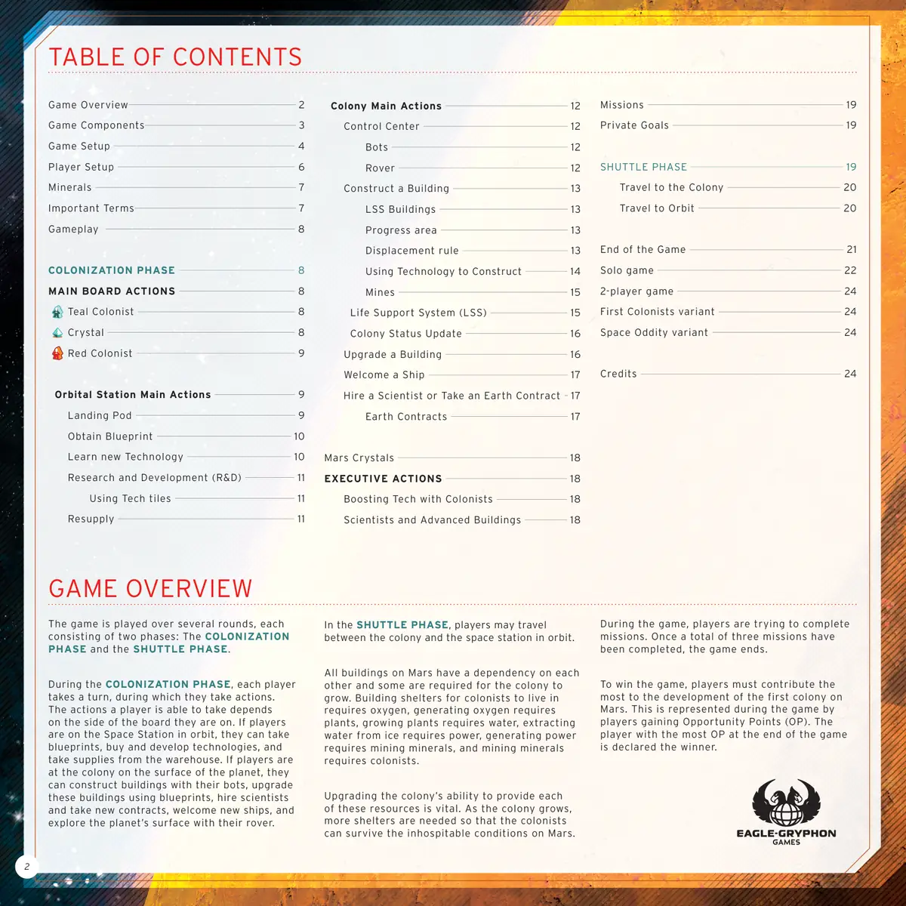
📝 第 2 页 AI 机翻对照（点击展开）
游戏概览
游戏组件
游戏设置
玩家设置
矿物
重要术语
游戏玩法
殖民阶段
主板行动
蓝绿色殖民者
水晶
红色殖民者
轨道站主行动
登陆舱
获得蓝图
学习新技术
研发（R&D）
使用科技板块
补给
殖民地主行动
控制中心
机器人
漫游车
建造建筑
LSS建筑
进度区域
替换规则
使用技术建造 14
矿场
生命支持系统（LSS）
殖民地状态更新
升级建筑
欢迎飞船
雇佣科学家或承接地球契约 17
地球契约
火星水晶
执行行动
使用殖民者增强科技
科学家和高级建筑
任务
私人目标
航天飞机阶段
前往殖民地
前往轨道
游戏结束
单人游戏
双人游戏
首批殖民者变体
太空古怪变体
制作人员
游戏进行数个回合，每个回合包含两个阶段：殖民阶段和航天飞机阶段。
在殖民阶段，每位玩家轮流进行行动。玩家能够执行的行动取决于他们所在的游戏板面位置。如果玩家在轨道上的空间站，他们可以获取蓝图、购买和开发技术，以及从仓库获取补给。如果玩家在行星表面的殖民地，他们可以用机器人建造建筑，使用蓝图升级这些建筑，雇佣科学家和承接新契约，欢迎新飞船，并用漫游车探索行星表面。
在航天飞机阶段，玩家可以在殖民地和轨道上的空间站之间移动。
火星上的所有建筑相互依赖，有些是殖民地发展所必需的。为殖民者建造住所需要氧气，产生氧气需要植物，种植植物需要水，从冰中提取水需要能源，产生能源需要开采矿物，而开采矿物需要殖民者。
提升殖民地提供每种资源的能力至关重要。随着殖民地的发展，需要更多住所以便殖民者能在火星的不适宜环境中生存。
在游戏过程中，玩家试图完成任务。一旦总共完成了三个任务，游戏结束。
要赢得游戏，玩家必须对火星上第一个殖民地的发展做出最大贡献。这在游戏中通过玩家获得机会点（OP）来体现。游戏结束时拥有最多OP的玩家被宣布为获胜者。
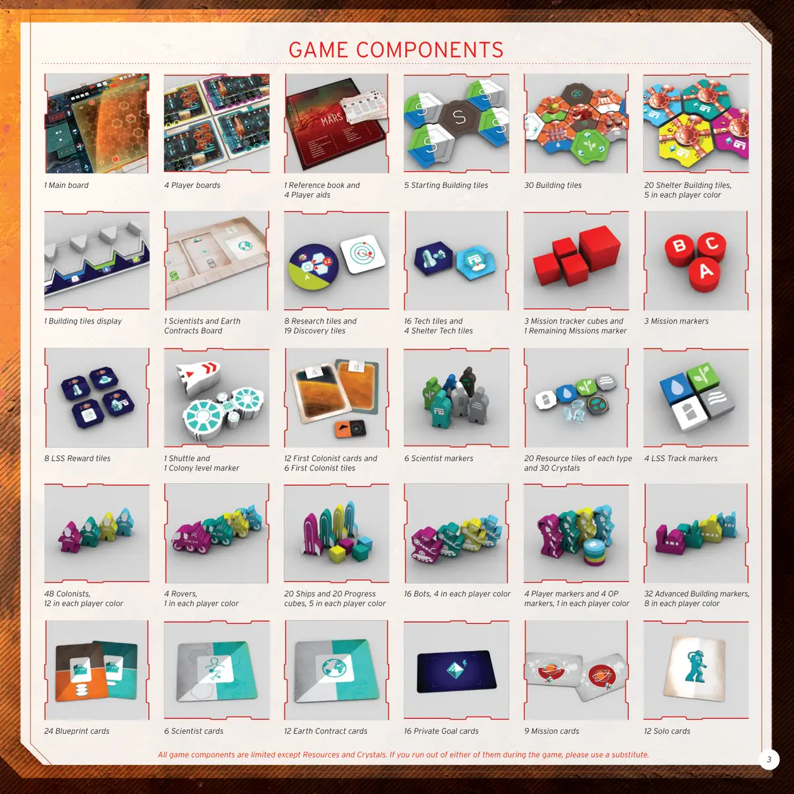
📝 第 3 页 AI 机翻对照（点击展开）
游戏组件
1个主版图
1个建筑板块展示区
8个LSS奖励板块
48个殖民者，每种玩家颜色12个
24张蓝图卡牌
所有游戏组件都是有限的，除了资源和水晶。如果在游戏过程中用完了其中任何一种，请使用替代品。
4个玩家版图
每种类型20个资源板块
和30个水晶
1个航天飞机和
1个殖民地等级标记物
4个漫游车，每种玩家颜色1个
6张科学家卡牌
1本参考手册和
4个玩家辅助卡
8张研究板块和
19张发现板块
20个避难所建筑板块，每种玩家颜色5个
20艘飞船和20个进度立方体，每种玩家颜色5个
12张地球契约卡牌
12张第一批殖民者卡牌和
6张第一批殖民者板块
16张科技板块和
4张避难所科技板块
4个玩家标记物和4个OP标记物，每种玩家颜色1个
16张私人目标卡牌
5个起始建筑板块
3个任务追踪立方体和
1个剩余任务标记物
16个机器人，每种玩家颜色4个
6个科学家标记物
9张任务卡牌
30个建筑板块
12张单人模式卡牌
4个LSS轨道标记物
1个科学家和地球契约版图
3个任务标记物
32个高级建筑标记物，每种玩家颜色8个
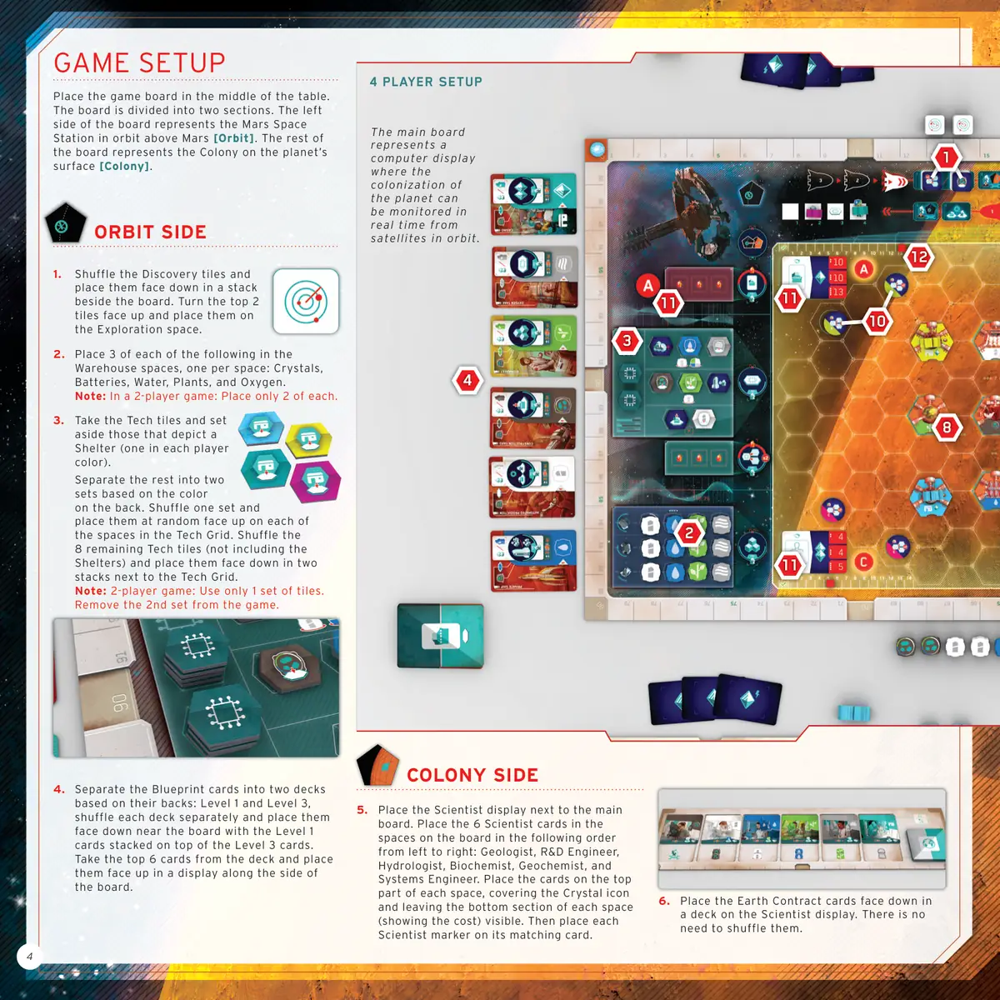
📝 第 4 页 AI 机翻对照（点击展开）
游戏设置
将游戏版图放在桌子中央。
版图分为两个区域。版图的左侧代表火星轨道上的火星空间站[Orbit]。版图的其余部分代表行星表面的殖民地[Colony]。
轨道区域
1.
将发现板块洗混，面朝下放在版图旁堆成一叠。翻开顶部的2个板块，放在探索区域上。
- 在仓库区域中放置每种资源各3个，每个空间放一个：水晶、电池、水、植物和氧气。
注意：在2人游戏中：每种只放置2个。
3. 取出科技板块，将带有避难所图案的板块分开（每种玩家颜色一个）。
其余的根据背面的颜色分成两组。洗混其中一组，随机面朝上放在科技网格的每个区域上。洗混剩下的8个科技板块（不包括避难所），面朝下放在科技网格旁的两叠中。
注意：2人游戏：只使用一组板块。将第二组从游戏中移除。
4. 根据背面将蓝图卡分成两副：1级和3级，分别洗混，然后面朝下放在版图旁，1级卡堆放在3级卡堆上面。从牌堆顶取6张牌，面朝上放在版图侧边的展示区中。
殖民地区域
5. 将科学家展示区放在主版图旁。将6张科学家卡按从左到右的顺序放在版图上的区域中：地质学家、研发工程师、水文学家、生物化学家、地球化学家和系统工程师。将卡放在每个区域的上部，覆盖水晶图标，并保持每个区域的下部（显示成本）可见。然后将每个科学家指示物放在对应的卡上。
6. 将地球合同卡面朝下放在科学家展示区的一副牌堆中。无需洗混。
主版图代表一个
计算机显示器，
可以从轨道上的
卫星实时监控
行星的殖民过程。
4人游戏设置
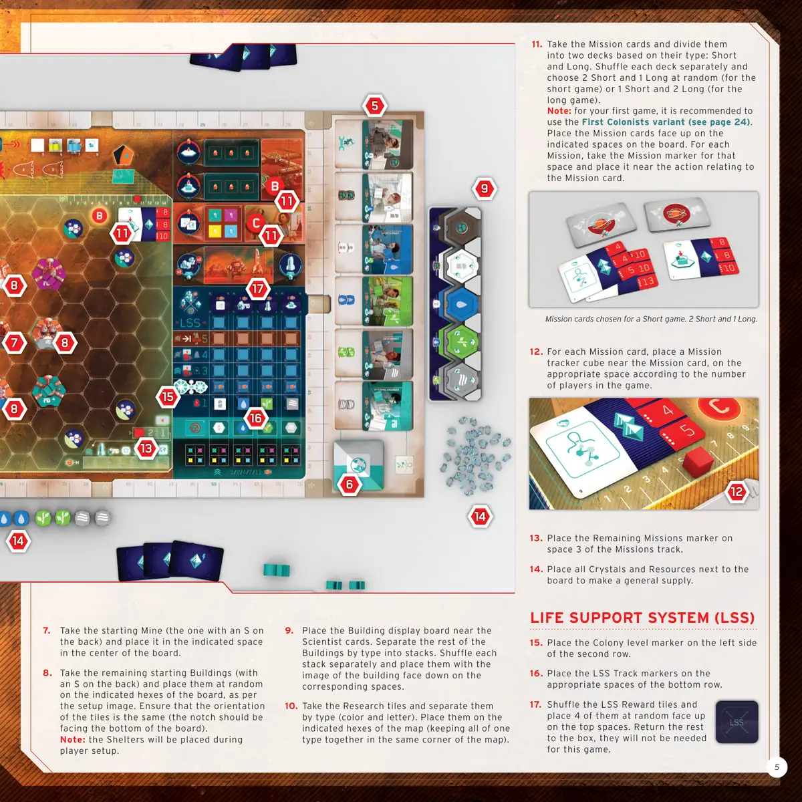
📝 第 5 页 AI 机翻对照（点击展开）
- 拿起起始矿场（背面有S标记的那个）并将其放置在版图中心标记的位置上。
- 拿起其余的起始建筑（背面有S标记的）并根据设置图随机放置在版图标记的六边形格子上。确保板块的方向一致（缺口应朝向版图底部）。
注意：避难所将在玩家设置阶段放置。
9. 将建筑展示板放置在科学家卡牌附近。将其余建筑按类型分成堆。分别洗混每堆建筑，并将它们建筑图案面朝下放置在对应的位置上。
10. 拿起研究板块并按类型（颜色和字母）分开。将它们放置在地图标记的六边形格子上（同一类型的所有板块保持在地图的同一角落）。
11. 拿起任务卡并根据它们的类型分成两副牌组：短任务和长任务。分别洗混每副牌组，然后随机选择2张短任务和1张长任务（用于短游戏）或1张短任务和2张长任务（用于长游戏）。
注意：对于你的第一局游戏，建议使用首批殖民者变体（见第24页）。将任务卡面朝上放置在版图标记的位置上。对于每个任务，取该位置的任务指示物并将其放置与任务卡相关的行动附近。
12. 对于每个任务卡，根据游戏中的玩家数量，在任务卡附近相应的位置上放置一个任务追踪骰子。
13. 将剩余任务指示物放置在任务轨道的第3格上。
14. 将所有水晶和资源放置在版图旁边，形成一个公共资源堆。
生命维持系统（LSS）
15. 将殖民地等级指示物放置在第二行左侧。
16. 将LSS轨道指示物放置在底行相应的位置上。
17. 洗混LSS奖励板块并随机选择4张面朝上放置在顶部的位置上。其余的放回盒中，本局游戏不需要。
短游戏选择的任务卡。2张短任务和1张长任务。
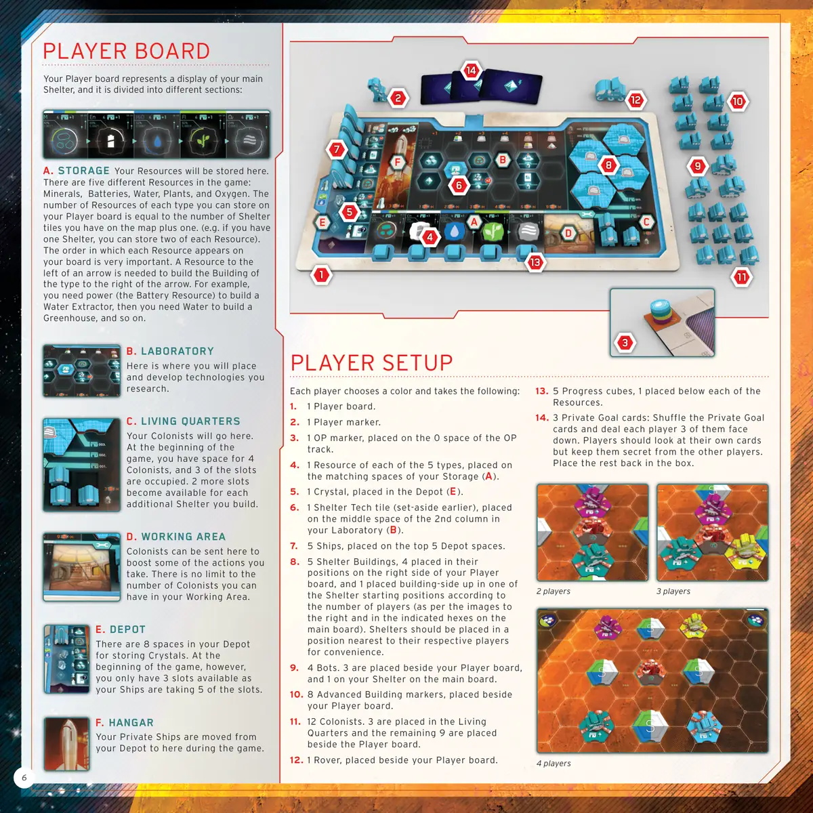
📝 第 6 页 AI 机翻对照（点击展开）
玩家设置
玩家版图
每位玩家选择一种颜色并拿取以下物品：
- 1个玩家版图。
- 1个玩家指示物。
- 1个OP指示物，放置在OP轨道的0格上。
- 每种资源各1个，共5种，放置在你的储存区(A)的对应格上。
- 1个水晶，放置在仓库(E)中。
- 1个避难所科技板块（之前已置于一旁），放置在你的实验室(B)第二列的中间格上。
- 5艘飞船，放置在仓库顶部的5个格上。
- 5个避难所建筑，4个放置在玩家版图右侧的指定位置，1个根据玩家数量（参照右侧图片和主版图上标记的六边形）建筑面朝上放置在一个避难所起始位置。为方便起见，避难所应放置在离各自玩家最近的位置。
- 4个机器人。3个放置在玩家版图旁边，1个放置在主版图上的你的避难所上。
- 8个高级建筑指示物，放置在玩家版图旁边。
- 12个殖民者。3个放置在居住区，其余9个放置在玩家版图旁边。
- 1个漫游车，放置在玩家版图旁边。
- 5个进度立方体，每种资源下方各放置1个。
- 3张私人目标卡：洗混私人目标卡，每位玩家发3张面朝下。玩家应查看自己的牌，但对其他玩家保密。将剩余的牌放回盒中。
你的玩家版图代表你的主要避难所的展示，它分为不同的区域：
A. 储存区 你的资源将储存在这里。游戏中有五种不同的资源：矿物、电池、水、植物和氧气。你可以在玩家版图上储存的每种资源的数量等于你在地图上拥有的避难所板块数量加一。（例如，如果你有一个避难所，你可以储存每种资源各两个）。
每种资源出现在你版图上的顺序非常重要。箭头左侧的资源是建造箭头右侧类型建筑所需的资源。例如，你需要电力（电池资源）来建造水提取器，然后你需要水来建造温室，以此类推。
B. 实验室
这里是你放置和研究你研发的科技的地方。
C. 居住区
你的殖民者将在这里。游戏开始时，你有4个殖民者位置，其中3个已被占用。每建造一个额外的避难所，将再增加2个可用位置。
D. 工作区
殖民者可以被送到这里来增强你执行的一些行动。你的工作区中殖民者的数量没有限制。
E. 仓库
你的仓库有8个格用于储存水晶。然而，在游戏开始时，
你只有3个可用槽位，
因为你的飞船占据了5个槽位。
F. 机库
你的私人飞船在游戏过程中
会从你的仓库移动到这里。
A
C
E
F
D
B
4名玩家
3名玩家
2名玩家
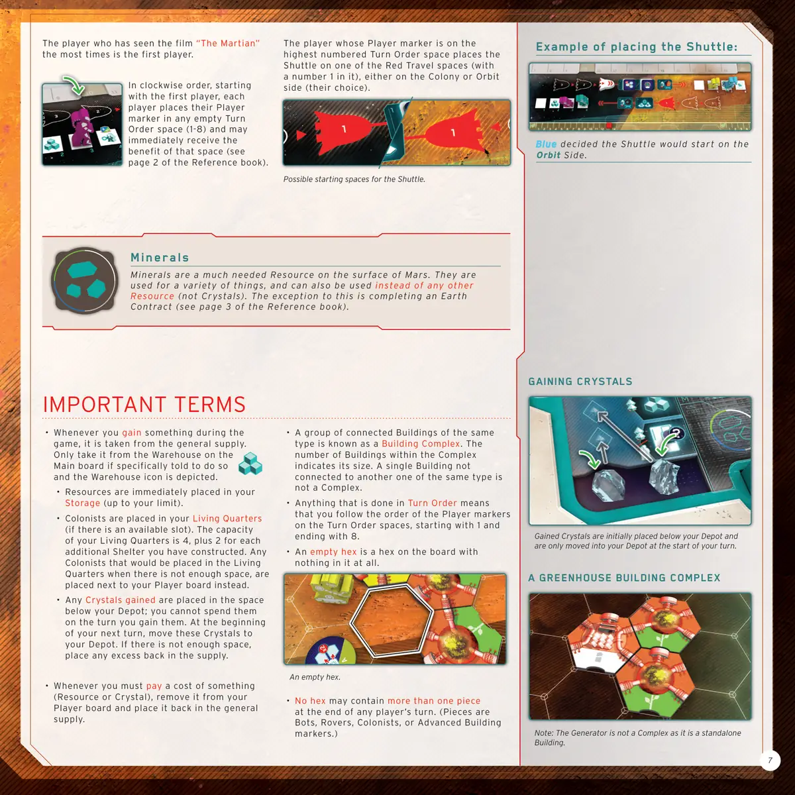
📝 第 7 页 AI 机翻对照（点击展开）
重要术语
• 在游戏过程中，当你获得某物时，它从公共供应区中取出。只有当特别指示这样做且仓库图标被显示时，才从主版图上的仓库中取出。
• 资源立即放入你的储存区（不超过你的限制）。
• 殖民者被放置在你的居住区（如果有可用槽位）。你的居住区容量为4，每多建造一个避难所增加2。当居住区没有足够空间时，任何本应被放置的殖民者将被放置在你的玩家版图旁边。
• 任何获得的晶体被放置在你的仓库下方的区域；你无法在获得它们的回合使用它们。在你的下一个回合开始时，将这些晶体移动到你的仓库。如果没有足够空间，将多余的放回供应区。
• 当你必须支付某物的成本（资源或晶体）时，将其从你的玩家版图上移除并放回公共供应区。
• 相同类型的连接建筑群被称为建筑群。建筑群中的建筑数量表示其大小。单个不与同类型其他建筑连接的建筑不是建筑群。
• 任何按回合顺序进行的事情意味着你按照回合顺序空间上的玩家标记顺序进行，从1开始，到8结束。
• 空六边形是版图上完全没有任何内容的六边形。
• 在任何玩家回合结束时，没有六边形可以包含超过一个棋子。（棋子包括机器人、漫游者、殖民者或高级建筑标记。）
看过电影《火星救援》次数最多的玩家是起始玩家。
按顺时针方向，从起始玩家开始，每位玩家将自己的玩家标记放置在任何空的回合顺序空间（1-8）中，并可以立即获得该空间的收益（参见参考手册第2页）。
玩家标记位于最高编号回合顺序空间的玩家将航天器放置在其中一个红色旅行空间（内有数字1）上，可以在殖民地侧或轨道侧（由其选择）。
航天器可能的起始空间。
矿物
矿物是火星表面急需的资源。它们有多种用途，也可以代替任何其他资源（晶体除外）。例外情况是完成地球契约（参见参考手册第3页）。
蓝色
蓝色决定航天器从
轨道
轨道侧开始。
温室建筑群
注意：发电机不是建筑群，因为它是独立建筑。
获得晶体
获得的晶体最初被放置在你的仓库下方，并在你的回合开始时才移动到你的仓库中。
放置航天器的示例：
一个空的六边形。
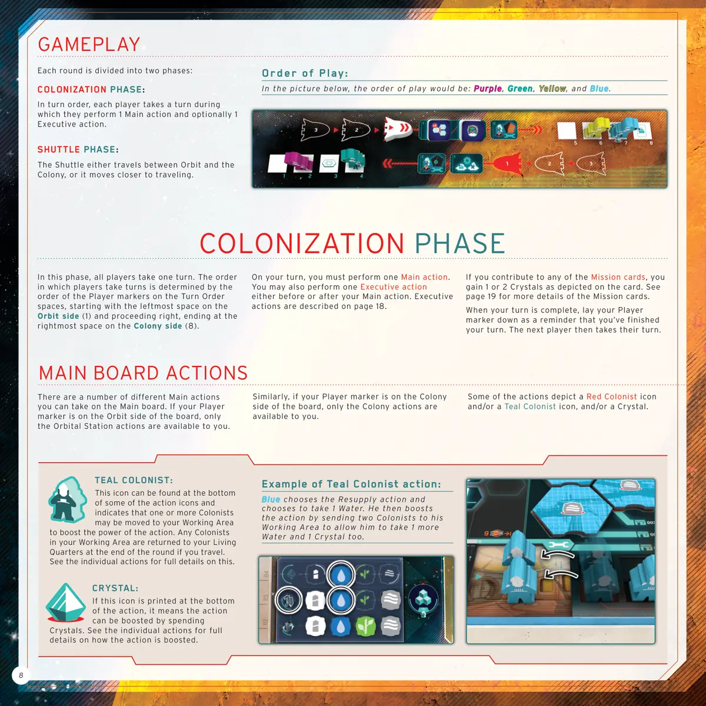
📝 第 8 页 AI 机翻对照（点击展开）
游戏进行
殖民阶段
主版图行动
每个轮分为两个阶段：
殖民阶段：
按回合顺序，每位玩家轮流执行1个主行动和可选的1个执行行动。
航天飞机阶段：
航天飞机要么在轨道和殖民地之间往返，要么向完成旅行迈进。
在此阶段，所有玩家轮流行动。玩家行动的顺序由玩家标记在回合顺序格上的顺序决定，从轨道侧最左边的格子(1)开始，向右进行，到殖民地侧最右边的格子(8)结束。
轮到你时，你必须执行一个主行动。你也可以在主行动之前或之后执行一个执行行动。执行行动在第18页描述。
如果你对任何任务卡做出贡献，你会根据卡上所示获得1个或2个水晶。关于任务卡的更多细节请参见第19页。
当你的回合结束时，将你的玩家标记放倒作为你已完成回合的提醒。然后下一位玩家开始他们的回合。
你可以在主版图上执行多种不同的主行动。如果你的玩家标记在版图的轨道侧，那么只有轨道站行动可供你使用。同样，如果你的玩家标记在版图的殖民地侧，那么只有殖民地行动可供你使用。
一些行动描绘了红色殖民者图标和/或蓝绿色殖民者图标，和/或水晶。
蓝绿色殖民者：
这个图标可以在某些行动图标的底部找到，表示一个或多个殖民者可以被移动到你的工作区以增强行动的力量。如果你在旅行结束时，你工作区中的所有殖民者都会被送回你的居住区。
关于这方面的完整细节请参见各个行动。
水晶：
如果这个图标打印在行动底部，表示该行动可以通过花费水晶来增强。关于如何增强行动的完整细节请参见各个行动。
行动顺序：
在下图中，行动顺序将是：紫色、紫色、绿色、绿色、黄色、黄色和蓝色、蓝色。
蓝绿色殖民者行动示例：
蓝色玩家选择补给行动，并选择获得1个水。然后他通过将两个殖民者送到他的工作区来增强行动，这使他能够再获得1个水和1个水晶。
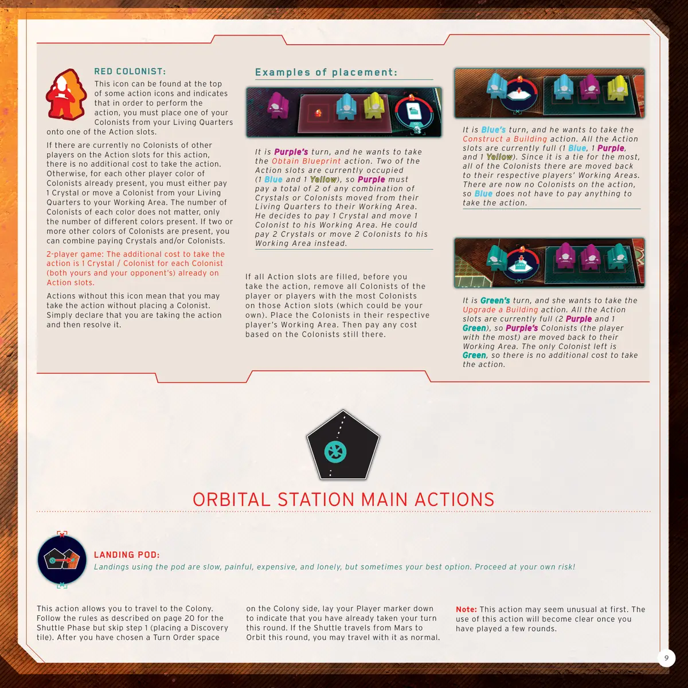
📝 第 9 页 AI 机翻对照（点击展开）
轨道站主要行动
此行动允许你前往殖民地。
遵循第20页上描述的穿梭阶段规则，但跳过第1步（放置发现板块）。在你选择了殖民地一侧的回合顺序空间后，放下你的玩家标记，表示你已经在这一轮中完成了你的回合。如果穿梭飞船在本轮从火星飞往轨道，你可以正常随行。
注意：此行动一开始可能看起来不寻常。一旦你玩过几轮，使用此行动的目的就会变得清晰。
登陆舱：
使用登陆舱登陆缓慢、痛苦、昂贵且孤独，但有时这是你最好的选择。自行承担风险！
红色殖民者：
此图标可以在某些行动图标的顶部找到，表示要执行此行动，你必须将你的一名殖民者从你的生活区放到一个行动槽位上。
如果当前没有其他玩家的殖民者在这个行动的行动槽位上，那么执行此行动没有额外费用。否则，对于已经存在的每个其他玩家颜色的殖民者，你必须支付1个水晶或将一名殖民者从你的生活区移动到你的工作区。每种颜色的殖民者数量无关紧要，只有存在的不同颜色的数量才重要。如果存在两种或更多其他颜色的殖民者，你可以组合支付水晶和/或殖民者。
2人游戏：执行此行动的额外费用是每个已经位于行动槽位上的殖民者（包括你的和对手的）支付1个水晶/殖民者。
没有此图标的行动意味着你可以在不放殖民者的情况下执行行动。只需声明你正在执行该行动，然后解决它。
放置示例：
现在是紫色的回合，他想要执行获取蓝图行动。两个行动槽位当前已被占用（1个蓝色和1个黄色），因此紫色必须总共支付2个水晶或从其生活区移动到其工作区的殖民者的任意组合。他决定支付1个水晶并将1名殖民者移动到他的工作区。他也可以支付2个水晶或将2名殖民者移动到他的工作区。
如果所有行动槽位都已满，在你执行行动之前，移除那些槽位上殖民者最多的玩家的一名或多名殖民者（可能是你自己的）。将这些殖民者放到各自玩家的工作区。然后根据仍然存在的殖民者支付任何费用。
现在是蓝色的回合，他想要执行建造建筑行动。所有行动槽位当前已满（1个蓝色、1个紫色和1个黄色）。由于数量最多的是平局，所以那里的所有殖民者都被移回各自玩家的工作区。
该行动上现在没有殖民者，
所以蓝色
蓝色玩家无需支付任何费用即可
执行该行动。
现在是绿色
绿色玩家的回合，她想要执行
升级建筑行动。所有行动槽
当前已满（2个紫色
紫色和1个
绿色
绿色），因此紫色玩家的
紫色玩家的殖民者（拥有殖民者最多的玩家）
被移回他们的工作区。剩下的唯一殖民者是
绿色
绿色，因此执行该行动没有额外费用。
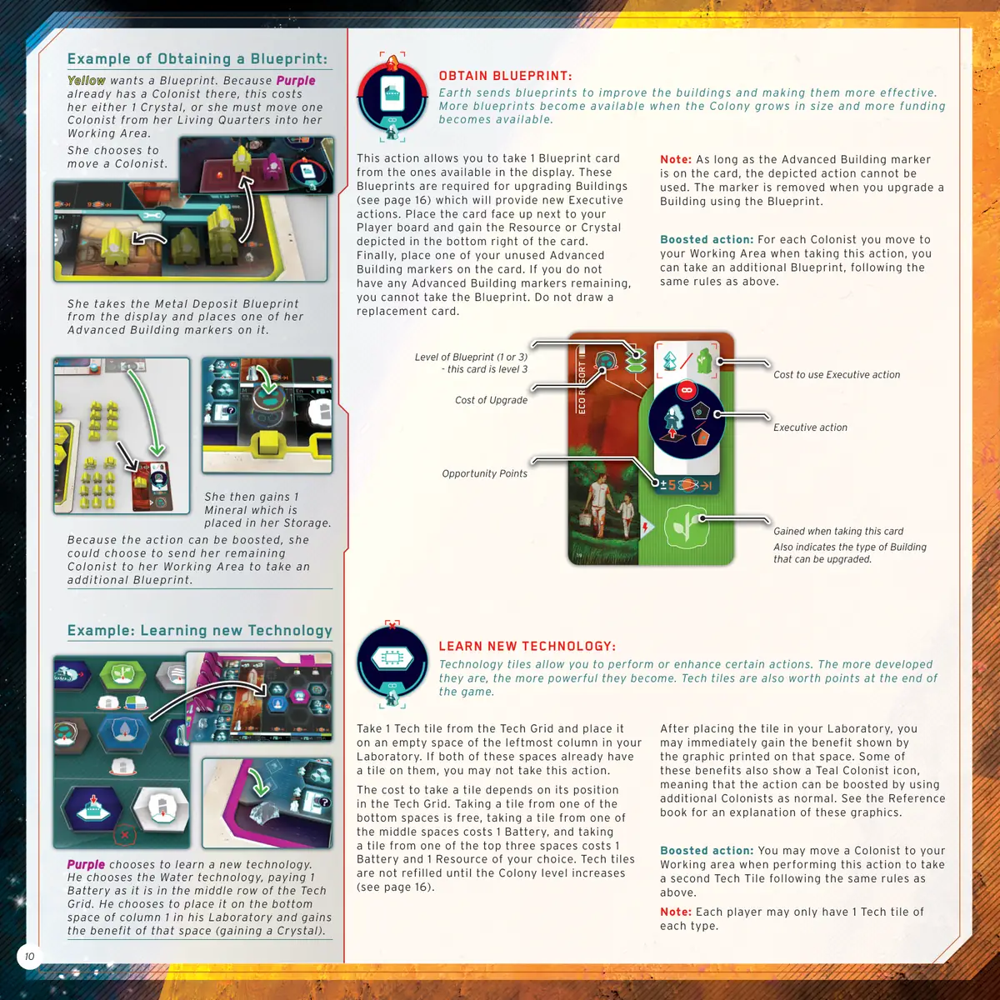
📝 第 10 页 AI 机翻对照（点击展开）
从科技网格中拿取1个科技板块，并将其放置在你的实验室最左边列的空位上。如果这两个空位都已经有一个板块，你不能执行此行动。
拿取板块的成本取决于其在科技网格中的位置。从底部空位拿取板块是免费的，从中间空位拿取板块需要1个电池，从顶部三个空位拿取板块需要1个电池和1个你选择资源。科技板块不会在殖民地等级提升前补充（见第16页）。
将板块放置在你的实验室后，你可以立即获得该板块上图形所示的好处。其中一些好处还显示有青色殖民者图标，意味着该行动可以通过使用额外的殖民者来增强，如常规定义。参考书中解释了这些图形的含义。
增强行动：执行此行动时，你可以将一个殖民者移动到你的工作区，以按照上述相同规则拿取第二个科技板块。
注意：每位玩家每种类型的科技板块只能有1个。
学习新技术：
科技板块允许你执行或增强某些行动。它们的发展程度越高，就越强大。科技板块在游戏结束时也计分。
示例：学习新技术
紫色
紫色选择学习一项新技术。他选择水技术，由于它在科技网格的中间行，需要支付1个电池。他选择将其放置在他实验室第1列的底部空位，并获得该空位的好处（获得1个水晶）。
升级成本
蓝图等级（1或3）
- 这张卡是3级
机会点
获得此卡时获得
也指示可升级的建筑类型
执行行动成本
执行行动示例：
黄色
黄色想要一张蓝图。由于紫色已经有一个殖民者在那里，这需要她支付1个水晶，或者必须将她的一名殖民者从她的生活区移动到她的工作区。
她选择移动一个殖民者。
她从展示区中拿取金属沉积蓝图，并将她的一枚高级建筑指示物放置在上面。
然后她获得1个矿物，将其放置在她的储存区中。
由于该行动可以增强，她可以选择将她剩下的殖民者送到她的工作区，以获取额外的蓝图。
生态度假村
此行动允许你从展示区中拿取1张蓝图卡。这些蓝图是升级建筑所需的（见第16页），将提供新的执行行动。将卡牌正面朝上放置在你的玩家板旁边，并获得卡牌右下角所示资源或水晶。
最后，放置一枚你未使用的高级
在卡牌上建造标记。如果你没有任何高级建造标记剩余，你不能获取蓝图。不要摸一张替换卡牌。
注意：只要高级建造标记在卡牌上，所描绘的行动就不能使用。当你使用蓝图升级一座建筑时，该标记会被移除。
强化行动：在执行此行动时，每将一名殖民者移动到你的工作区，你可以额外获取一张蓝图，遵循上述相同规则。
获取蓝图：
地球发送蓝图来改善建筑并使其更有效。
随着殖民地规模扩大和更多资金可用，会有更多蓝图可用。
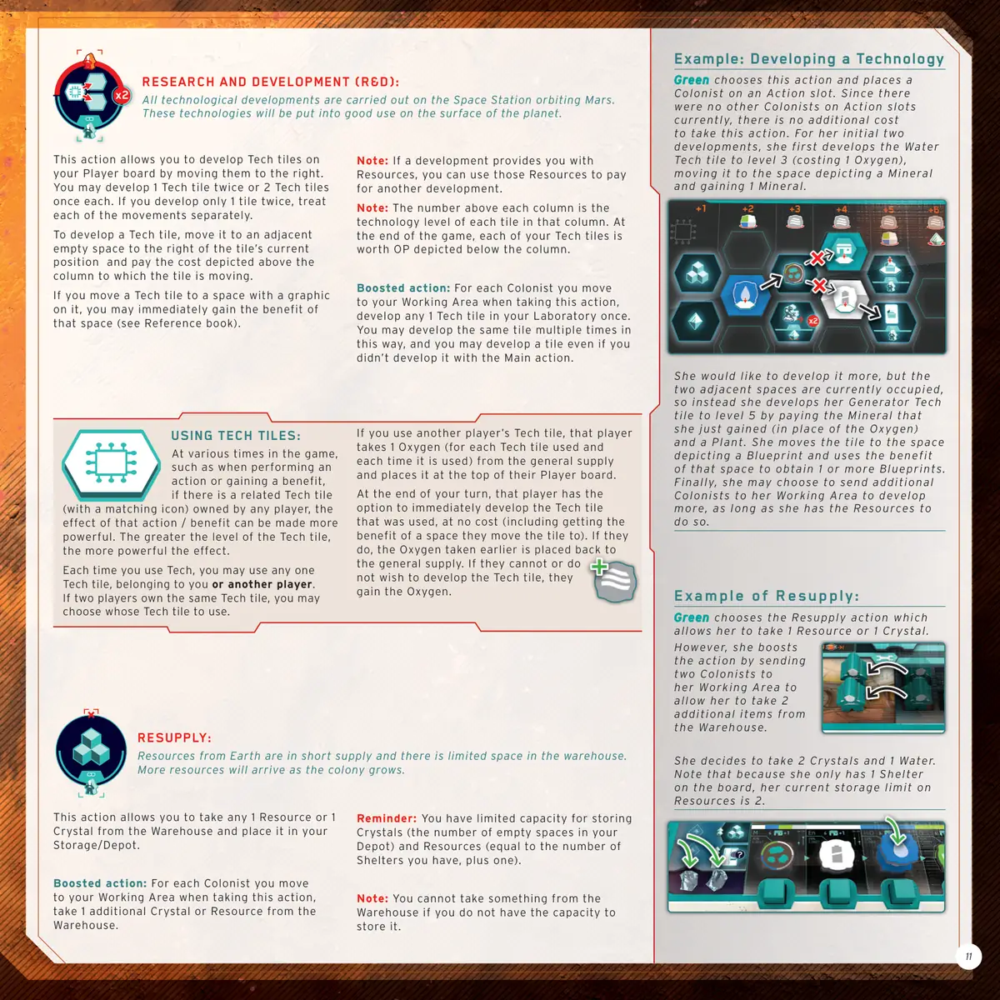
📝 第 11 页 AI 机翻对照（点击展开）
这个行动允许你通过将科技板块向右移动来发展你玩家板上的科技板块。
你可以将1个科技板块发展两次，或将2个科技板块各发展一次。如果你只将1个板块发展两次，请将每次移动分开处理。
要发展一个科技板块，将其移动到板块当前位置右侧的相邻空格，并支付板块要移动到的列上方所示的费用。
如果你将科技板块移动到一个带有图标的格子上，你可以立即获得该格子的收益（参见参考手册）。
注意：如果某项发展为你提供了资源，你可以使用这些资源来支付另一项发展的费用。
注意：每列上方的数字是该列中每个科技板块的技术等级。游戏结束时，你每个科技板块的价值等于该列下方所示的OP值。
增强行动：在执行此行动时，每将1个殖民者移动到你的工作区，你可以让你的实验室中的任意1个科技板块发展一次。你可以通过这种方式多次发展同一个板块，即使你没有用主行动发展过该板块也可以发展。
研究与开发(R&D)：
所有技术发展都在环绕火星运行的太空站上进行。
这些技术将在行星表面得到充分利用。
x2
使用科技板块：
在游戏中的不同时间点，例如执行行动或获得收益时，如果任何玩家拥有相关的科技板块（带有匹配图标），则该行动/收益的效果可以变得更加强大。科技板块的等级越高，效果就越强大。
每次使用科技时，你可以使用任意一个科技板块，无论它属于你还是其他玩家。
如果两个玩家拥有相同的科技板块，你可以选择使用谁的科技板块。
如果你使用其他玩家的科技板块，该玩家从公共供应区取走1个氧气（每使用一个科技板块及每次使用时），并将其放置在其玩家板的顶部。
在你的回合结束时，该玩家可以选择立即免费（包括获得他们移动板块到的格子的收益）发展被使用的科技板块。如果他们这样做，之前取走的氧气会被放回公共供应区。如果他们无法或不想发展该科技板块，他们则获得这些氧气。
示例：发展技术
格林
格林选择此行动并将一个殖民者放在行动槽上。由于当前没有其他殖民者在行动槽上，因此执行此行动没有额外费用。对于她的初始两次发展，她首先将水科技板块发展到3级（花费1个氧气），将其移动到描绘矿物的格子，并获得1个矿物。
她想进一步发展它，但两个相邻格子目前已被占用，
因此，她通过支付刚刚获得的矿物（代替氧气）和1个植物，将她的发电机科技板块提升到5级。她将板块移动到描绘蓝图的空间，并使用该空间的效益获得1个或更多蓝图。最后，只要她有足够的资源，她可以选择将更多的殖民者送到她的工作区以进行更多开发。
补给的示例：
绿方
绿方选择补给行动，这使她可以从仓库中获取1个资源或1个水晶。然而，她通过将两个殖民者送到她的工作区来增强这个行动，从而允许她从仓库中再获取2个物品。她决定获取2个水晶和1个水。请注意，因为她在版图上只有1个避难所，她当前对资源的存储限制是2。
这个行动允许你从仓库中任取1个资源或1个水晶，并将其放入你的存储区/仓库。
增强行动：在执行此行动时，每将1个殖民者移动到你的工作区，就从仓库中额外获取1个水晶或资源。
提醒：你存储水晶的能力有限（你仓库中的空格数）和资源的能力有限（等于你拥有的避难所数量加一）。
注意：如果你没有存储能力，你不能从仓库中获取物品。
补给：
地球上的资源供应短缺，仓库空间有限。随着殖民地的发展，将有更多资源抵达。
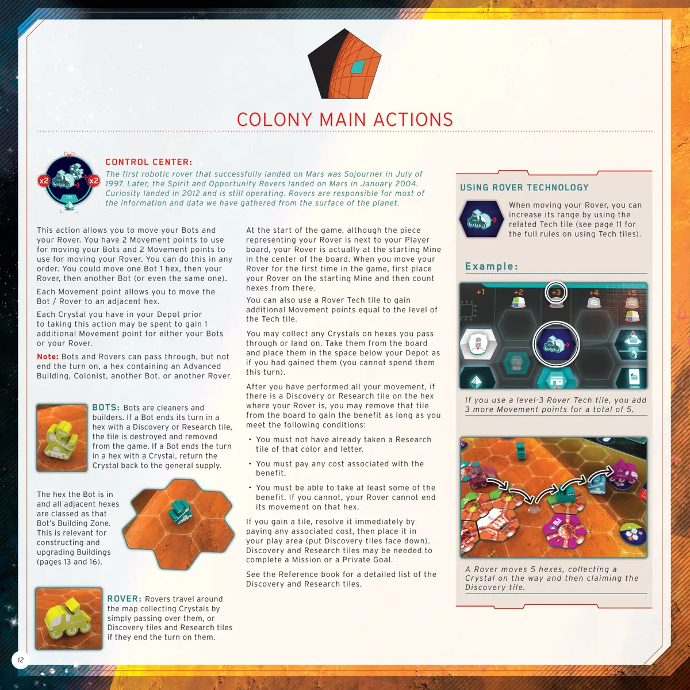
📝 第 12 页 AI 机翻对照（点击展开）
殖民地主要行动
此行动允许你移动你的机器人和漫游车。你有2个移动点用于移动你的机器人，2个移动点用于移动你的漫游车。你可以按任何顺序执行这些行动。你可以移动一个机器人1个六边形，然后移动你的漫游车，再移动另一个机器人（甚至是同一个机器人）。每个移动点允许你将机器人/漫游车移动到相邻的六边形。
在执行此行动前，你仓库中的每个水晶都可以被花费，以获得1个额外的移动点，用于你的机器人或漫游车。
注意：机器人和漫游车可以穿过包含高级建筑、殖民者、另一个机器人或另一个漫游车的六边形，但不能在这些六边形上结束回合。
机器人：机器人是清洁工和建造者。如果机器人在一个包含发现板块或研究板块的六边形上结束回合，该板块将被销毁并从游戏中移除。如果机器人在一个包含水晶的六边形上结束回合，将水晶返还到公共资源区。
机器人所在的六边形和所有相邻的六边形都被归类为该机器人的建造区域。这对于建造和升级建筑（第13页和第16页）很重要。
漫游车：漫游车在地图上移动，通过简单地经过水晶来收集它们，或者如果它们在板块上结束回合，则收集发现板块和研究板块。
游戏开始时，虽然代表你漫游车的棋子位于你的玩家板旁边，但你的漫游车实际上位于版图中央的起始矿场。当你第一次在游戏中移动你的漫游车时，先将你的漫游车放在起始矿场上，然后从那里开始计算六边形。
你也可以使用漫游车科技板块来获得额外的移动点，数量等于该科技板块的等级。
你可以收集你经过或降落的六边形上的任何水晶。从版图上取走它们，并将它们放在你仓库下方的空间中，就像你获得了它们一样（你不能在本回合花费它们）。
完成所有移动后，如果你的漫游车所在的六边形上有发现板块或研究板块，只要满足以下条件，你可以移除该板块以获得收益：
• 你尚未获得过相同颜色和字母的研究板块。
• 你必须支付与收益相关的任何费用。
• 你必须能够获得至少部分收益。如果你不能，你的漫游车就不能在该六边形上结束移动。
如果你获得了一个板块，立即通过支付任何相关费用来解析它，然后将其放入你的游戏区域（将发现板块面朝下放置）。发现板块和研究板块可能需要用来完成任务或私人目标。
有关发现板块和研究板块的详细列表，请参阅参考手册。
控制中心：
成功登陆火星的第一个机器人漫游车是1997年7月的旅居者号（Sojourner）。
1997年。后来，"勇气号"和"机遇号"火星车于2004年1月登陆火星。
"好奇号"于2012年登陆并仍在运行。火星车负责我们从这颗行星表面收集到的
大部分信息和数据。
x2
x2
使用火星车技术
移动你的火星车时，你可以通过使用相关的科技板块（使用科技板块的完整规则见第11页）来增加其移动范围。
示例：
如果你使用3级火星车科技板块，你将额外获得3点移动点数，总共为5点。
一个火星车移动5个六边形，途中收集一个水晶，然后宣称发现板块。
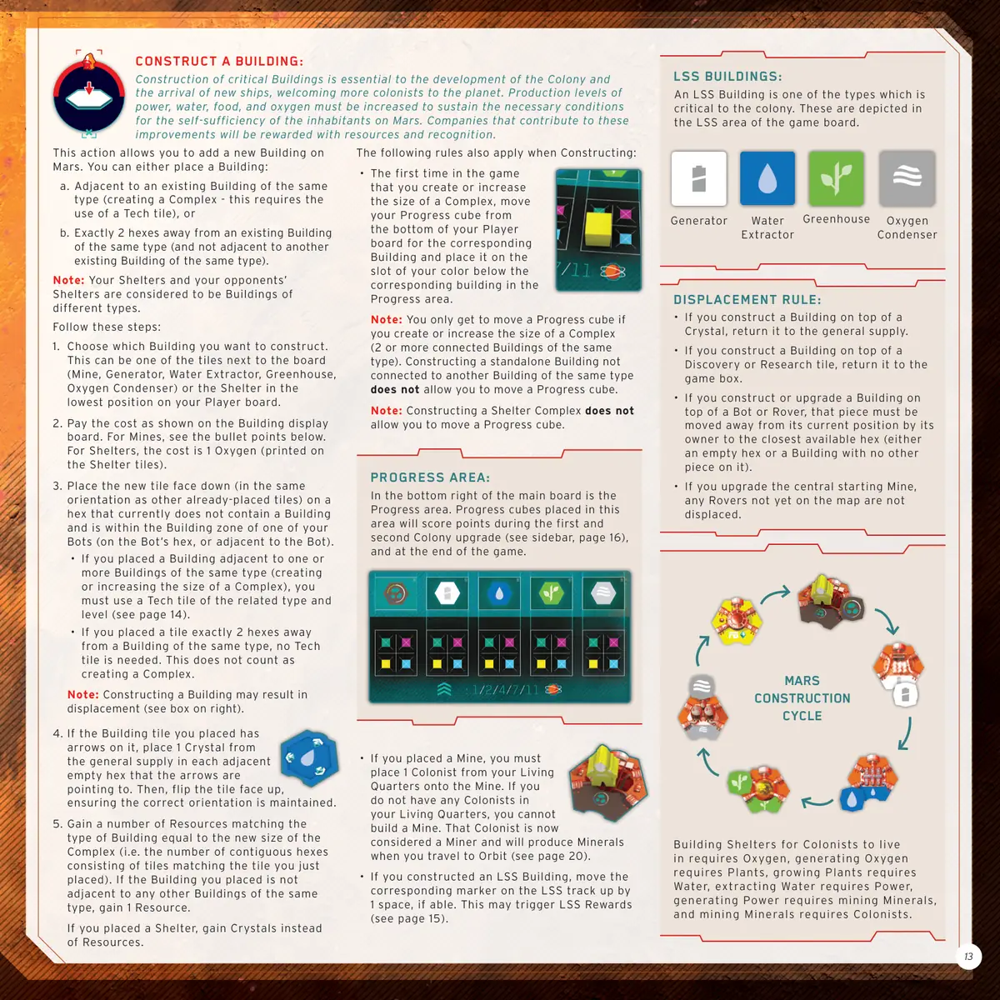
📝 第 13 页 AI 机翻对照（点击展开）
建造建筑：
关键建筑的建造对于殖民地的发展和飞船的到来至关重要，欢迎更多殖民者来到这颗星球。必须提高电力、水、食物和氧气的生产水平，以维持火星居民自给自足的必要条件。为这些改进做出贡献的公司将获得资源和认可。
此行动允许你在火星上添加一座新建筑。你可以放置一座建筑：
a. 相邻于同类型的现有建筑（形成一个综合体——这需要使用一张科技板块），或
b. 距离同类型的现有建筑恰好2个六边形（且不与其他同类型的现有建筑相邻）。
注意：你的避难所和对手的避难所被视为不同类型的建筑。
请遵循以下步骤：
- 选择你要建造的建筑。这可以是版图旁边的板块之一（矿场、发电机、水提取器、温室、氧气冷凝器）或你玩家版图上位置最低的避难所。
2. 支付建筑展示板上所示的成本。对于矿场，请参见下面的要点。对于避难所，成本为1点氧气（印在避难所板块上）。
- 将新板块面朝下放置（与其他已放置板块的方向相同）在一个当前不包含建筑且位于你其中一个机器人建筑区域内的六边形上（在机器人的六边形上，或与机器人相邻）。
• 如果你放置的建筑与一个或多个同类型的建筑相邻（形成或增大了综合体的大小），你必须使用一张相关类型和等级的科技板块（参见第14页）。
• 如果你放置的板块距离同类型的建筑恰好2个六边形，则不需要科技板块。这不计为形成综合体。
注意：建造建筑可能导致位移（见右侧方框）。
4. 如果你放置的建筑板块上有箭头，从公共供应区在每个箭头指向的相邻空六边形中放置1个水晶。然后将板块翻面，确保保持正确的方向。
5. 获得与建筑类型相匹配的资源，数量等于新综合体的大小（即由与你刚放置板块相匹配的板块组成的连续六边形数量）。如果你放置的建筑不与任何其他同类型的建筑相邻，则获得1个资源。
如果你放置的是避难所，则获得水晶而非资源。
建造时还适用以下规则：
• 游戏中第一次创建或增大综合体大小时，将你的进度立方体从你玩家版图上对应建筑的底部移出，并放置在
在进步区域中对应建筑下方你颜色的槽位中。
注意：只有当你创建或增大一个复合体（2个或更多相同类型连接的建筑）时，你才能移动一个进步立方体。建造一个不与同类型建筑连接的独立建筑不允许你移动进步立方体。
注意：建造庇护所复合体不允许你移动进步立方体。
• 如果你建造了一个矿场，你必须将1个殖民者从你的居住区放到矿场上。如果你在居住区没有任何殖民者，你不能建造矿场。那个殖民者现在被视为一名矿工，当你前往轨道时将产生矿物（见第20页）。
• 如果你建造了一个LSS建筑，如果可能，将LSS轨道上对应的标记向前移动1格。这可能会触发LSS奖励（见第15页）。
LSS建筑：
LSS建筑是殖民地中关键类型的建筑之一。这些建筑在游戏版的LSS区域中显示。
替换规则：
• 如果你在一个水晶上建造建筑，将其返还到公共资源池中。
• 如果你在一个发现或研究板块上建造建筑，将其返还到游戏盒中。
• 如果你在一个机器人或漫游车上建造或升级建筑，该棋子的所有者必须将其从当前位置移动到最近的可用六边形格（可以是空的六边形格或没有其他棋子的建筑）。
• 如果你升级中央起始矿场，任何尚未在地图上的漫游车不会被替换。
发电机
水提取器
温室
氧气冷凝器
进步区域：
在主板的右下角是进步区域。在这个区域放置的进步立方体将在第一次和第二次殖民地升级期间（见侧边栏，第16页）以及游戏结束时计分。
为殖民者建造居住的庇护所需要氧气，产生氧气需要植物，种植植物需要水，提取水需要能源，产生能源需要开采矿物，而开采矿物需要殖民者。
火星
建设
周期
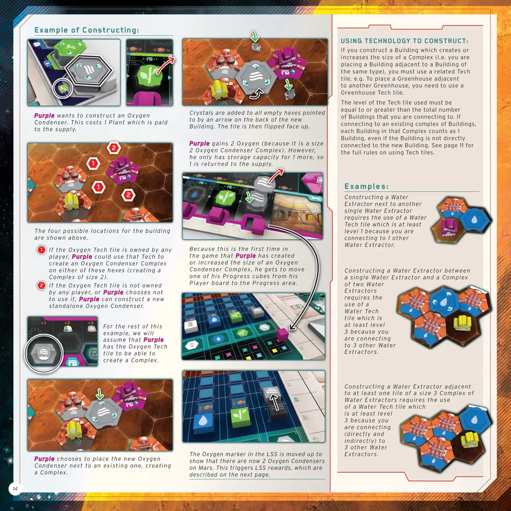
📝 第 14 页 AI 机翻对照（点击展开）
使用技术建造：
如果你建造一个建筑，该建筑会创建或增加一个综合体的规模（即你正在将一个建筑放置在相同类型的建筑旁边），你必须使用一个相关的科技板块。例如：要在另一个温室旁边放置一个温室，你需要使用一个温室科技板块。
所使用的科技板块的等级必须等于或大于你正在连接的建筑总数。如果连接到现有的建筑综合体，该综合体中的每个建筑都计为1个建筑，即使该建筑没有直接连接到新建筑。关于使用科技板块的完整规则，请参见第11页。
示例：
在另一个单独的水萃取器旁边建造一个水萃取器，需要使用至少1级的水科技板块，因为你正在连接1个其他的水萃取器。
在一个单独的水萃取器和两个水萃取器的综合体之间建造一个水萃取器，需要使用至少3级的水科技板块，因为你正在连接3个其他的水萃取器。
在至少一个3级规模的水萃取器板块旁边建造一个水萃取器，需要使用至少3级的水科技板块，因为你正在连接（直接和间接地）3个其他的水萃取器。
建造示例：
紫色
紫色想要建造一个氧气冷凝器。这需要支付1个植物资源，该资源支付给供应区。
建筑可能的四个位置如上所示。
如果氧气科技板块由任何玩家拥有，紫色
紫色可以使用该科技在这两个六边形中的任意一个上创建一个氧气冷凝器综合体（创建一个规模为2的综合体）。
如果氧气科技板块没有被任何玩家拥有，或者紫色
紫色选择不使用它，紫色
紫色可以建造一个新的独立的氧气冷凝器。
在本示例的其余部分，我们将
假设紫色
紫色拥有氧气科技板块，以便能够创建一个综合体。
紫色
紫色选择将新的氧气冷凝器放置在现有的氧气冷凝器旁边，创建一个综合体。
将水晶添加到新建筑背面箭头指向的所有空六边形上。然后将板块翻到正面。
紫色
紫色获得2个氧气（因为这是一个规模为2的氧气冷凝器综合体）。然而，他只能再储存1个，所以有1个返回到供应区。
因为这是紫色
紫色在游戏中第一次创建或增加氧气冷凝器综合体的规模，他可以将他的一个进展立方体从他的玩家板块移动到进展区域。
LSS中的氧气标记被向上移动，以显示现在火星上有2个氧气冷凝器。这触发了LSS奖励，这些奖励在下一页描述。
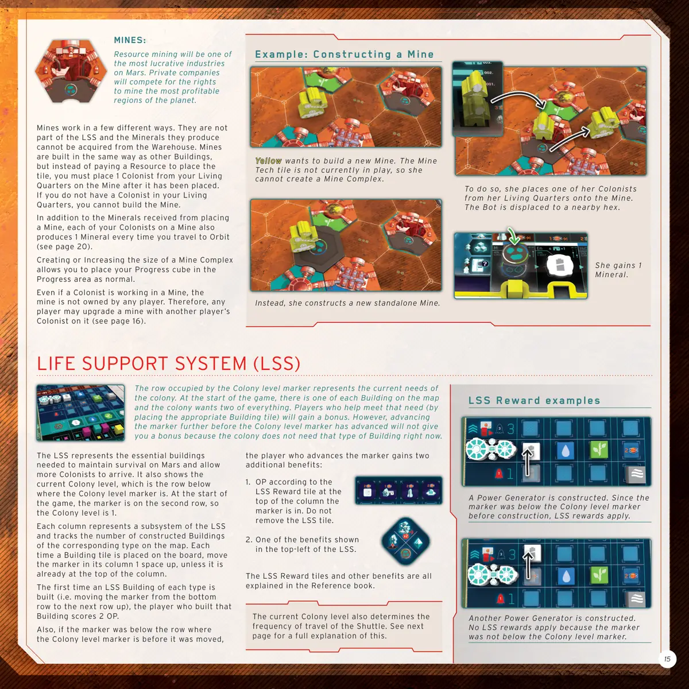
📝 第 15 页 AI 机翻对照（点击展开）
矿场有几种不同的运作方式。它们不属于生命维持系统(LSS)，其产生的矿物无法从仓库获取。矿场的建造方式与其他建筑相同，但在放置板块后，你必须从你的居住区放置1个殖民者到矿场上。如果你在居住区没有殖民者，你就无法建造矿场。
除了放置矿场获得的矿物外，你每个在矿场上的殖民者每次前往轨道时(见第20页)也会产生1个矿物。
创建或扩大矿场综合体允许你像平常一样将你的进度立方体放置在进度区域。
即使有殖民者在矿场工作，矿场也不属于任何玩家。因此，任何玩家都可以用另一个玩家的殖民者来升级矿场(见第16页)。
生命维持系统(LSS)代表了维持火星生存和允许更多殖民者到达所需的基本建筑。它还显示了当前的殖民地等级，即殖民地等级标记下方的行。游戏开始时，标记在第二行，因此殖民地等级为1。
每一列代表LSS的一个子系统，并追踪地图上对应类型已建造建筑的数量。每次在版图上放置一个建筑板块时，将其所在列的标记向上移动1格，除非它已经在该列的顶部。
每种类型的LSS建筑首次建造时(即将标记从底部行向上移动一行)，建造该建筑的玩家获得2个OP。
此外，如果标记在移动前位于殖民地等级标记所在的行下方，那么推进标记的玩家将获得两个额外的好处：
1. 根据标记所在列顶部的LSS奖励板块获得OP。不要移除LSS板块。
2. 获得LSS左上角显示的好处之一之一。
LSS奖励板块和其他好处都在参考书中解释。
矿场：
资源开采将成为火星上最有利可图的产业之一。私人公司将竞相争取开采该星球最盈利地区的权利。
殖民地等级标记所在的行代表了殖民地的当前需求。游戏开始时，地图上每种建筑各有一个，而殖民地需要每种建筑各两个。帮助满足这一需求的玩家(通过放置相应的建筑板块)将获得奖励。然而，在殖民地等级标记尚未推进的情况下提前推进标记不会给你奖励，因为殖民地目前不需要那种类型的建筑。
示例：建造矿场
黄色
黄色想要建造一个新矿场。矿场科技板块当前未在游戏中，所以她
无法创建一个矿业综合体。
相反，她建造一个新的独立矿场。
为此，她将一个殖民者从她的居住区放置到矿场上。
机器人被移到邻近的六边形格。
她获得1个矿物。
当前殖民地等级也决定穿梭机的旅行频率。关于此的完整解释见下一页。
LSS奖励示例
建造了一个发电站。由于建造前标记低于殖民地等级标记，因此适用LSS奖励。
又建造了一个发电站。不适用LSS奖励，因为建造前标记并未低于殖民地等级标记。
生命支持系统 (LSS)
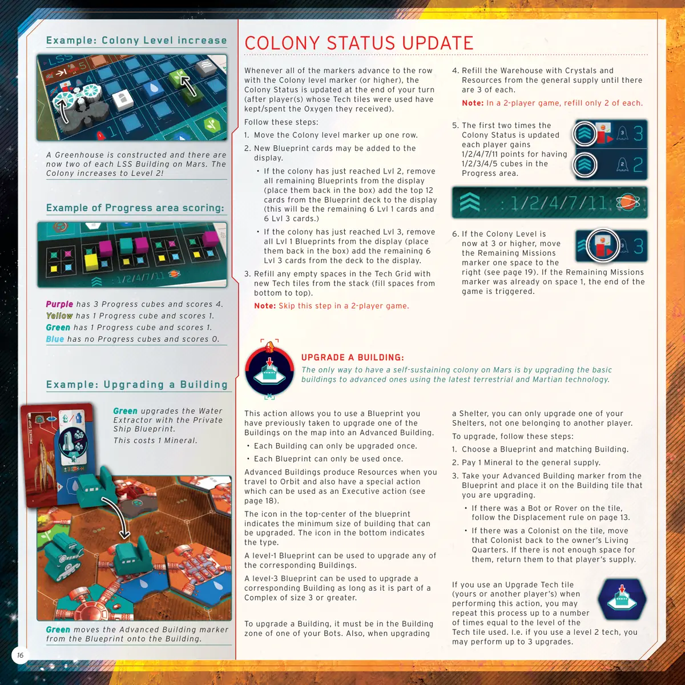
📝 第 16 页 AI 机翻对照（点击展开）
升级建筑：
要在火星上拥有一个自给自足的殖民地，唯一的方法就是使用最新的地球和火星技术将基础建筑升级为高级建筑。
这个行动允许你使用先前获得的蓝图，将地图上的一个建筑升级为高级建筑。
• 每个建筑只能被升级一次。
• 每个蓝图只能使用一次。
高级建筑在你前往轨道时会产出资源，并且拥有一个可以作为行政行动使用的特殊行动（见第18页）。
蓝图顶部中央的图标表示可升级建筑的最小规模。底部的图标表示类型。
1级蓝图可用于升级任何相应的建筑。
3级蓝图可用于升级相应的建筑，只要它是规模为3或更大的综合体的一部分。
要升级建筑，它必须位于你其中一个机器人的建筑区域中。此外，在升级避难所时，你只能升级你自己的避难所，不能升级其他玩家的避难所。
要进行升级，请遵循以下步骤：
- 选择一个蓝图和相应的建筑。
- 向公共供应区支付1个矿物。
3. 从蓝图中取出你的高级建筑指示物，并将其放置在你正在升级的建筑板块上。
• 如果板块上有机器人或探测车，请遵循第13页的置换规则。
• 如果板块上有殖民者，将该殖民者移回其所有者的居住区。如果没有足够的空间，将其返还给该玩家的供应区。
如果你在执行此行动时使用了科技板块（你或其他玩家的），你可以重复此过程，次数最多等于所使用科技板块的等级。即，如果你使用2级科技，你可以执行最多3次升级。
示例：升级建筑
格林
格林使用私人飞船蓝图升级了水提取器。
这需要1个矿物。
格林
格林将高级建筑指示物从蓝图移动到建筑上。
每当所有指示物前进到带有殖民地等级标记的行（或更高行）时，殖民地状态将在你的回合结束时更新（在使用了科技板块的玩家已获得/花费了他们获得的氧气之后）。
遵循以下步骤：
- 将殖民地等级标记向上移动一行。
2. 可以将新的蓝图卡添加到展示区中。
• 如果殖民地刚刚达到2级，从展示区中移除所有剩余的蓝图（放回盒中），从蓝图牌库中顶部的12张卡添加到展示区中（这将包括剩余的6张1级卡和6张3级卡。）
• 如果殖民地刚刚达到3级，从展示区中移除所有1级蓝图（放回盒中），添加剩余的6
殖民地状态更新
3. 从牌库将3级卡牌放到展示区。
4. 用牌堆中的新技术板块补充科技网格中的任何空格（从下到上填充空格）。
注意：在2人游戏中跳过此步骤。
5. 用通用供应库中的水晶和资源补充仓库，直到每种资源各有3个。
注意：在2人游戏中，每种资源只补充2个。
6. 殖民地状态更新前两次时，每个玩家根据其在进步区域的 cubes 数量获得 1/2/4/7/11 分：
- 1个 cube：1分
- 2个 cube：2分
- 3个 cube：4分
- 4个 cube：7分
- 5个 cube：11分
7. 如果殖民地等级现在达到3或更高，将剩余任务指示物向右移动一格（见第19页）。如果剩余任务指示物已经在第1格，则触发游戏结束。
进步区域计分示例：
紫色
紫色有3个进步 cubes，获得4分。
黄色
黄色有1个进步 cube，获得1分。
绿色
绿色有1个进步 cube，获得1分。
蓝色
蓝色没有进步 cubes，获得0分。
殖民地状态更新
示例：殖民地等级提升
建造了一个温室，现在火星上每种LSS建筑都有两个。殖民地提升到2级！
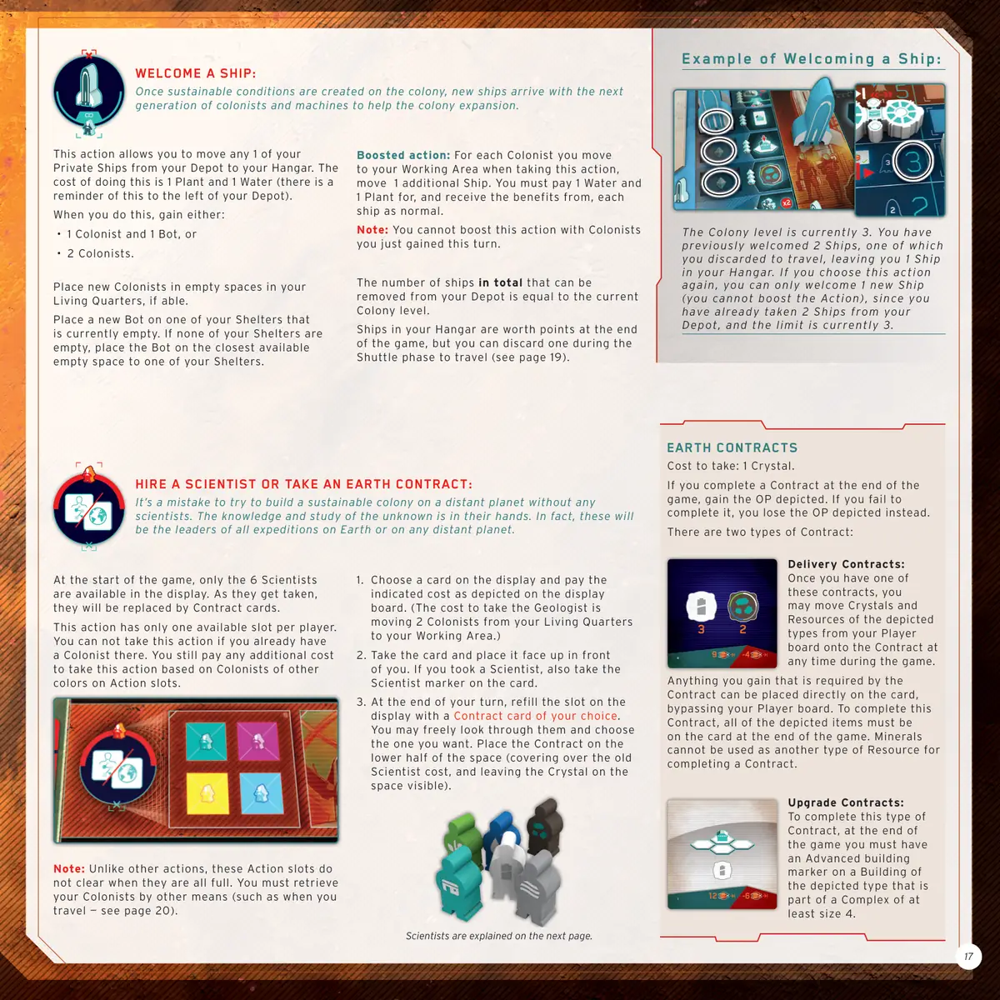
📝 第 17 页 AI 机翻对照（点击展开）
聘请科学家或承接地球合同：
试图在没有科学家的情况下在遥远的行星上建立一个可持续的殖民地是一个错误。对未知的知识和研究掌握在他们手中。事实上，他们将成为所有在地球或任何遥远行星上的探险队的领导者。
迎接飞船：
一旦在殖民地创造了可持续的条件，新的飞船就会带着下一代殖民者和机器到来，以帮助殖民地扩张。
游戏开始时，展示区中只有6位科学家可用。当他们被拿走后，他们将被合同卡牌替换。
此行动每位玩家只有一个可用槽位。如果你在那个位置已经有殖民者，你不能执行此行动。你仍然需要根据其他颜色殖民者在行动槽位上的情况支付任何额外费用。
注意：与其他行动不同，当所有行动槽位都满时，这些行动槽位不会清空。你必须通过其他方式（例如当你旅行时——见第20页）取回你的殖民者。
1. 选择展示区中的一张卡牌并支付展示板上所示的成本。（聘请地质学家的成本是将2个殖民者从你的居住区移动到你的工作区。）
2. 拿起卡牌并将其正面朝上放在你面前。如果你拿的是科学家，同时也要拿起卡牌上的科学家指示物。
3. 在你的回合结束时，用你选择的合同卡牌补充展示区中的槽位。你可以自由浏览它们并选择你想要的卡牌。将合同卡牌放在空间的下半部分（覆盖旧的科学家成本，并保持空间上的水晶可见）。
地球合同
承接成本：1个水晶。
如果你在游戏结束时完成了一项合同，获得所示的OP。如果你未能完成它，则失去所示的OP。
有两种类型的合同：
交付合同：
一旦你拥有其中一项合同，你可以在游戏期间的任何时候将所示类型的资源和水晶从你的玩家板块移动到合同卡牌上。
任何获得的合同所需物品都可以直接放在卡牌上，绕过你的玩家板块。要完成此合同，游戏结束时所有所示物品必须都在卡牌上。矿物不能作为另一种资源用于完成合同。
升级合同：
要完成此类合同，游戏结束时你必须在一个至少规模为4的综合体中，在所示类型的建筑上放置一个高级建筑指示物。
此行动允许你将你的任意1艘私人飞船从你的仓库移动到你的机库。这样做的成本是1个植物和1个水（在你的仓库左侧有此提醒）。
当你这样做时，获得以下之一：
• 1个殖民者和1个机器人，或
• 2个殖民者。
如果可能，在你的生活区（Living Quarters）的空格中放置新的殖民者（Colonists）。
在你当前为空的其中一个庇护所（Shelter）上放置一个新的机器人（Bot）。如果所有你的庇护所都已满，则将机器人放置在距离其中一个庇护所最近的可用空格上。
强化行动：当你执行此行动时，每将1个殖民者移至你的工作区（Working Area），额外移动1艘飞船。你必须为每艘飞船正常支付1水（Water）和1植物（Plant），并正常获得其带来的收益。
注意：你不能用你在本回合刚获得的殖民者来强化此行动。
可以从你的仓库（Depot）中移除的飞船总数等于当前的殖民地等级（Colony level）。
你机库（Hangar）中的飞船在游戏结束时计分，但你可以在穿梭机阶段（Shuttle phase）期间弃置一艘以进行旅行（参见第19页）。
科学家（Scientists）在下一页解释。
-4
-6
欢迎飞船示例：
当前殖民地等级为3。你之前已欢迎了2艘飞船，其中一艘你已弃置以进行旅行，这使你的机库中剩下1艘飞船。如果你再次选择此行动，你只能欢迎1艘新飞船（你不能强化此行动），因为你已经从你的仓库中取出了2艘飞船，而当前限制为3艘。
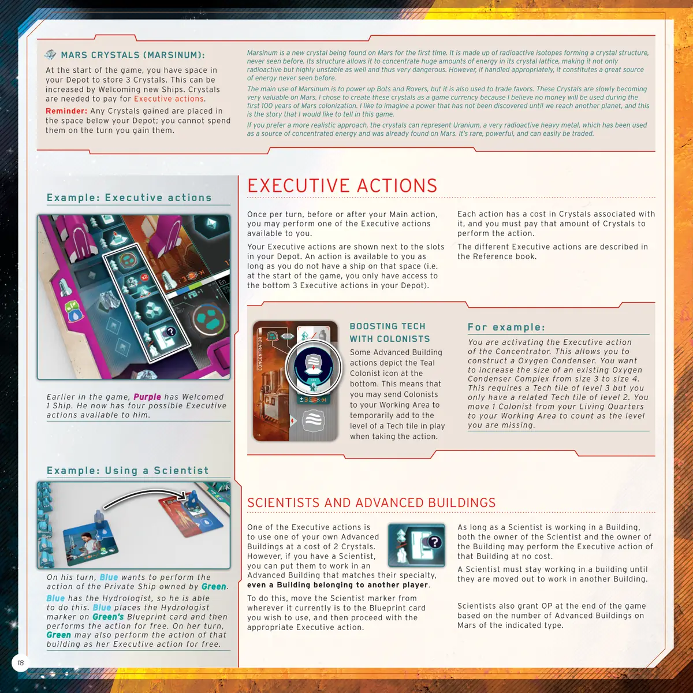
📝 第 18 页 AI 机翻对照（点击展开）
每个回合一次，在你的主要行动之前或之后，
你可以执行一个可用的行政行动。
你的行政行动显示在你的仓库的槽位旁边。只要那个空间上没有你的飞船（即游戏开始时，你只能访问你仓库中的底部3个行政行动），该行动就对你可用。
每个行动都有相应的水晶成本，你必须支付相应数量的水晶才能执行该行动。
不同的行政行动在参考书中描述。
火星水晶 (MARSINUM):
游戏开始时，你的仓库中有空间可以储存3个水晶。这可以通过迎接新飞船来增加。水晶需要用来支付行政行动的费用。
提醒：获得的水晶应放置在你的仓库下方；你无法在获得它们的回合使用它们。
科学家和高级建筑
行政行动之一是
使用你自己的高级建筑，
成本为2个水晶。
但是，如果你有一位科学家，
你可以让他们在与其专业相匹配的高级建筑中工作，
即使是属于另一位玩家的建筑。
为此，将科学家指示物从当前位置移动到你想要使用的蓝图卡上，然后执行相应的行政行动。
只要科学家在建筑中工作，科学家的所有者和建筑的所有者都可以免费执行该建筑的行政行动。
科学家必须继续在建筑中工作，直到他们被移动到另一个建筑中工作。
科学家还会在游戏结束时根据火星上指定类型的高级建筑数量授予OP。
行政行动
Marsinum是首次在火星上发现的新水晶。它由放射性同位体构成晶体结构，前所未见。其结构使其能够在晶格中集中大量能量，不仅具有放射性，而且极不稳定，因此非常危险。然而，如果处理得当，它将成为一种前所未见的巨大能源。
Marsinum的主要用途是为机器人和漫游车提供动力，但也用于交易 favors。这些水晶在火星上正逐渐变得非常宝贵。我选择创建这些水晶作为游戏货币，因为在火星殖民的前100年内不会使用货币。我喜欢想象一种在我们到达另一个星球之前尚未被发现的力量，这就是我想在这款游戏中讲述的故事。
如果你更喜欢更现实的方法，这些水晶可以代表铀，一种具有高度放射性的重金属，它已被使用
作为一种浓缩能源来源，并且已经在火星上被发现。它稀有、强大，并且可以轻松交易。
示例：使用科学家
在他的回合中，蓝色玩家
蓝色玩家想要执行
绿色玩家
绿色玩家的私人飞船的行动。
蓝色玩家
蓝色玩家拥有水文学家，因此他能够
执行此行动。蓝色玩家
蓝色玩家将水文学家
指示物放在绿色玩家
绿色玩家的蓝图卡上，然后
免费执行该行动。在她的回合中，
绿色玩家
绿色玩家也可以免费将该建筑
作为她的执行行动来执行。
示例：执行行动
在游戏早期，紫色玩家
紫色玩家已经迎接了
1艘飞船。现在他有四种可能的执行行动
可供选择。
利用殖民者提升科技
一些高级建筑行动在底部
描绘了蓝绿色殖民者图标。这意味着
你可以将殖民者
送到你的工作区，在执行行动时
暂时增加已放置的科技板块的等级。
例如：
你正在激活浓缩器的执行行动。这使你能够
建造一个氧气冷凝器。你想要将现有的
氧气冷凝器综合体的大小从3级提升到4级。
这需要3级的科技板块，但你只有
相关的2级科技板块。你将1个殖民者
从你的住所移动到你的工作区，以计作
你所缺少的等级。
浓缩器
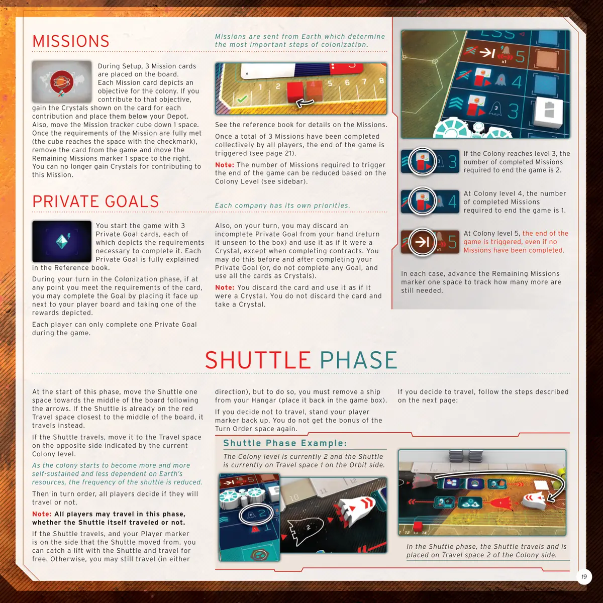
📝 第 19 页 AI 机翻对照（点击展开）
在本阶段开始时，沿着箭头方向将航天器向版图中央移动一格。如果航天器已经在靠近版图中央的红色旅行格上，则改为进行旅行。
如果航天器进行旅行，则将其移动到当前殖民地等级所指示的对侧旅行格。
随着殖民地变得越来越自给自足，对地球资源的依赖减少，航天器的频率也随之降低。
然后按回合顺序，所有玩家决定是否进行旅行。
注意：无论航天器本身是否进行了旅行，所有玩家都可以在本阶段进行旅行。
如果航天器进行了旅行，且你的玩家标记位于航天器移动前的那一侧，你可以搭乘航天器免费旅行。否则，你仍然可以（任一方向）旅行，但必须从你的机库中移除一艘飞船（将其放回游戏盒）。
如果你决定不旅行，将你的玩家标记竖立起来。你不能再获得回合顺序格的奖励。
如果你决定旅行，请遵循下一页描述的步骤：
在设置阶段，3张任务卡被放置在版图上。
每张任务卡描绘了殖民地的目标。如果你为该目标做出贡献，每贡献一次获得卡牌上显示的水晶，并将它们放在你的仓库下方。同时，将任务追踪立方体向下移动1格。
一旦任务要求完全满足（立方体到达带对勾的格），将卡牌移出游戏，并将剩余任务标记向右移动1格。你不能再为完成此任务而获得水晶。
关于任务的详细信息，请参阅参考书。
当所有玩家总共完成了3个任务时，将触发游戏结束（见第21页）。
注意：根据殖民地等级，触发游戏结束所需的任务数量可以减少（见侧边栏）。
游戏开始时，你拥有3张私人目标卡，每张卡都描绘了完成它所需的条件。每张私人目标都在参考书中有详细说明。
在殖民化阶段的你的回合中，如果你在任何时候满足了卡牌的要求，你可以通过将卡牌面朝上放在你的玩家板旁边并选择一张显示的奖励之一来完成目标。
每个玩家在游戏中只能完成一个私人目标。
此外，在你的回合中，你可以丢弃一张未完成的私人目标（将其未看状态放回盒中），并将其当作水晶使用，但在完成合约时除外。你可以在完成私人目标之前和之后这样做（或者，不完成任何目标，并将所有卡牌当作水晶使用）。
注意：你丢弃卡牌并将其当作
你是一个水晶。你不要弃掉这张牌并
获得一个水晶。
任务
私人目标
航天飞机阶段
如果殖民地达到3级，结束游戏所需的
已完成任务数量为2个。
在殖民地4级时，结束游戏所需的
已完成任务数量为1个。
在殖民地5级时，即使没有
任何任务已完成，也会触发游戏结束。
在每种情况下，将剩余任务指示物向前推进一格，以跟踪还需要多少个任务。
航天飞机阶段示例：
当前殖民地等级为2，航天飞机当前位于轨道侧的旅行空间1。
在航天飞机阶段，航天飞机移动并被放置在殖民地侧的旅行空间2。
任务从地球发送，它们决定了殖民化的最重要步骤。
每家公司都有自己的优先事项。
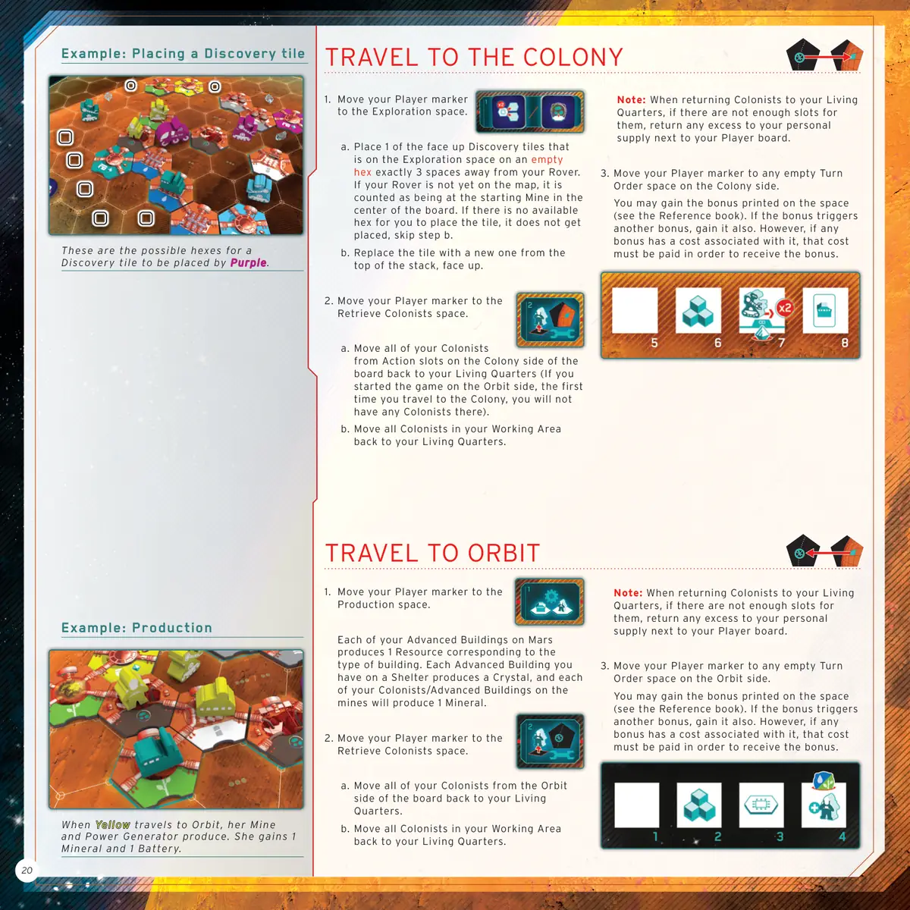
📝 第 20 页 AI 机翻对照（点击展开）
1. 将你的玩家指示物移到探索区域。
a. 将探索区域上1张正面朝上的发现板块放置在你的漫游者正正好3个格距离的空六边形格上。如果你的漫游者尚未在版图上，它被计作位于版图中央的起始矿场。如果没有可用的六边形格让你放置板块，则不放置板块，跳过步骤b。
b. 从牌堆顶部取一张新板块正面朝上替换该板块。
2. 将你的玩家指示物移到取回殖民者区域。
a. 将你在殖民地版面行动槽中的所有殖民者移回你的生活区（如果你从轨道面开始游戏，你第一次前往殖民地时，那里不会有任何殖民者）。
b. 将你工作区域中的所有殖民者移回你的生活区。
注意：当将殖民者返回你的生活区时，如果没有足够的槽位容纳他们，将多余的返回到你玩家板旁边的个人储备中。
3. 将你的玩家指示物移到殖民地版面上的任何空回合顺序区域。
你可以获得该区域上印制的奖励（见参考书）。如果该奖励触发了另一个奖励，也获得它。然而，如果任何奖励有关联成本，必须支付该成本才能获得奖励。
1. 将你的玩家指示物移到生产区域。
你在火星上的每座高级建筑都会生产1个与建筑类型对应的资源。你在避难所上的每座高级建筑将生产1个水晶，你在矿场上的每个殖民者/高级建筑将生产1个矿物。
2. 将你的玩家指示物移到取回殖民者区域。
a. 将你在版图轨道面上的所有殖民者移回你的生活区。
b. 将你工作区域中的所有殖民者移回你的生活区。
注意：当将殖民者返回你的生活区时，如果没有足够的槽位容纳他们，将多余的返回到你玩家板旁边的个人储备中。
3. 将你的玩家指示物移到轨道版面上的任何空回合顺序区域。
你可以获得该区域上印制的奖励（见参考书）。如果该奖励触发了另一个奖励，也获得它。然而，如果任何奖励有关联成本，必须支付该成本才能获得奖励。
前往殖民地
示例：放置发现板块
示例：生产
这些是紫色可以放置发现板块的可能六边形格。
当黄色前往轨道时，她的矿场和发电机生产。她获得1个矿物和1个电池。
前往轨道
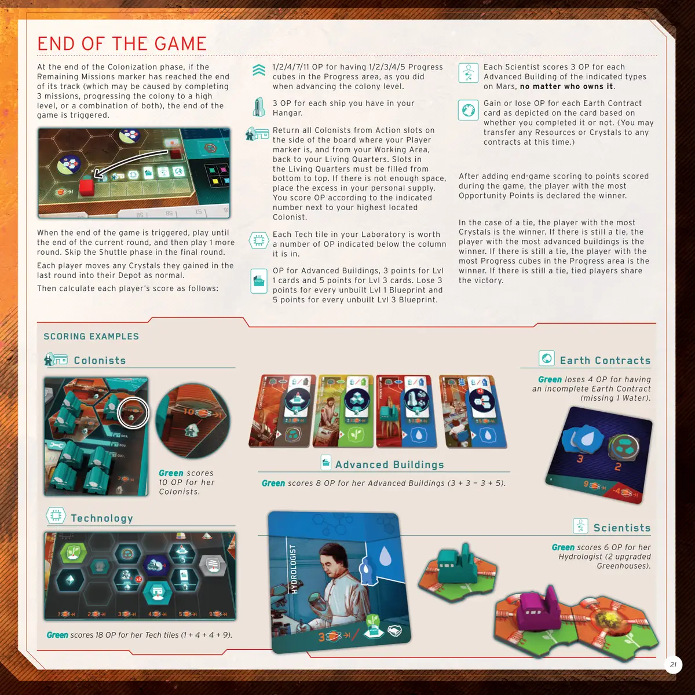
📝 第 21 页 AI 机翻对照（点击展开）
在殖民阶段结束时，如果剩余任务指示物已到达其轨道的终点（这可能是由完成3个任务、将殖民地提升到高级别或两者兼有造成的），则触发游戏结束。
当游戏结束时，继续玩到当前回合结束，然后再玩1个回合。在最后一轮跳过航天飞机阶段。
每位玩家将他们在最后一轮获得的任何水晶正常移入其仓库。
然后按以下方式计算每位玩家的分数：
在进步区域拥有1/2/3/4/5个进步方块时，分别获得1/2/4/7/11个机会点(OP)，就像你提升殖民地级别时一样。
你机库中的每艘飞船获得3个OP。
将玩家标记所在版图侧面的行动槽位以及你的工作区域中的所有殖民者送回你的居住区。居住区的槽位必须从下往上填满。如果没有足够的空间，将多余的放入你的个人供应区。
你根据你最高位置的殖民者旁边的指示数字获得OP。
你实验室中的每个科技板块根据其所在列下方指示的数字获得一定数量的OP。
高级建筑的OP：1级卡牌3分，3级卡牌5分。每个未建造的1级蓝图扣3分，每个未建造的3级蓝图扣5分。
每位科学家根据火星上指定类型的高级建筑数量，每座获得3个OP，无论谁拥有它。
根据你是否完成每张地球合同卡，按照卡片上的描述获得或失去OP。（此时你可以将任何资源或水晶转移到任何合同上。）
将游戏结束得分添加到游戏过程中获得的分数后，机会点最多的玩家被宣布为获胜者。
如果平局，则水晶最多的玩家获胜。如果仍然平局，则高级建筑最多的玩家获胜。如果仍然平局，则进步区域中进步方块最多的玩家获胜。如果仍然平局，则平局玩家共享胜利。
游戏结束
殖民者
计分示例
绿色
绿色因其殖民者获得10个OP。
绿色
绿色因其高级建筑获得8个OP（3 + 3 - 3 + 5）。
高级建筑
地球合同
绿色
绿色因未完成的地球合同（缺少1个水）而失去4个OP。
技术
绿色
绿色因其科技板块获得18个OP（1 + 4 + 4 + 9）。
绿色
绿色因其水文学家（2个升级的温室）获得6个OP。
科学家
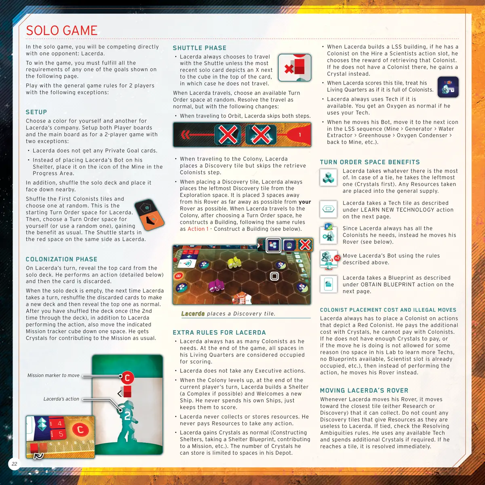
📝 第 22 页 AI 机翻对照（点击展开）
在单人游戏中，你将直接与一个对手竞争：Lacerda。
要赢得游戏，你必须满足下一页所示任意一个目标的所有要求。
使用双人游戏的一般规则进行游戏，但有以下例外：
设置
为你自己选择一种颜色，为Lacerda的公司选择另一种颜色。设置两个玩家版图和主版图，如同进行双人游戏，但有两个例外：
• Lacerda不会获得任何私人目标卡牌。
• 不要将Lacerda的机器人放置在他的庇护所上，而是将其放置在进展区域中的矿场图标上。
此外，洗混单人牌库并将其面朝下放置在附近。
洗混首批殖民者板块并随机选择一个。这是Lacerda的起始回合顺序空间。
然后，为你自己选择一个回合顺序空间（或使用随机选择的），如常获得相应收益。航天飞机起始位置与Lacerda同侧的红色空间。
殖民阶段
在Lacerda的回合，揭示单人牌库顶部的卡牌。他执行一个行动（详见下文），然后将该卡牌弃置。
当单人牌库为空时，下一次Lacerda进行回合时，将弃置的卡牌洗混成新牌库，然后如常揭示顶部卡牌。
在你洗混牌库一次后（第二次通过牌库时），除了Lacerda执行行动外，还需将指定的任务追踪立方体向下移动一格。他如常因对任务的贡献而获得水晶。
航天飞机阶段
• Lacerda总是选择与航天飞机同行，除非最近的单人卡牌顶部立方体旁边有一个X标记，在这种情况下他不进行旅行。
当Lacerda旅行时，随机选择一个可用的回合顺序空间。如常解决旅行，但有以下变更：
• 当前往轨道时，Lacerda跳过两个步骤。
• 当前往殖民地时，Lacerda放置一个发现板块，但跳过回收殖民者步骤。
• 当放置发现板块时，Lacerda总是从探索空间放置最左侧的发现板块。尽可能放置在距离他的漫游者3格远的位置，并尽可能远离你的漫游者。当Lacerda前往殖民地时，在选择回合顺序空间后，他建造一个建筑，遵循行动1-建造建筑（见下文）的相同规则。
Lacerda的额外规则
• Lacerda总是拥有他需要的所有殖民者。游戏结束时，他生活区中的所有空间都被视为已占用以计分。
• Lacerda不执行任何行政行动。
• 当殖民地升级时，在当前玩家回合结束时，Lacerda建造一个庇护所（尽可能建造复杂建筑）并欢迎一艘新飞船。他从不花费自己的飞船，只是保留它们以计分。
回合顺序空间收益
Lacerda（拉塞尔达）获取数量最多的那个。如果平局，他获取最左边的那个（优先获取水晶）。获取的任何资源都放入公共资源池中。
Lacerda按照下一页"学习新技术"行动描述获取一张科技板块。
由于Lacerda总是拥有他所需的所有殖民者，因此他改为移动他的漫游车（见下文）。
使用上述规则移动Lacerda的机器人。
Lacerda按照下一页"获取蓝图"行动描述获取一张蓝图。
殖民者放置成本和非法移动
Lacerda必须总是将殖民者放置在描绘红色殖民者的行动上。他使用水晶支付额外费用，不能使用殖民者支付。如果他没有足够的水晶支付，或者他正在进行的移动因某种原因不被允许（他的实验室没有空间学习更多科技、没有可用的蓝图、科学家位置已被占用等），那么他不执行该行动，而是改为移动他的漫游车。
移动LACERDA的漫游车
每当Lacerda移动他的漫游车时，它会向它可以收集的最近板块（研究板块或发现板块）移动。不要计算任何提供资源的发现板块，因为它们对Lacerda无用。如果平局，请检查解决歧义规则。他使用任何可用的科技，并在需要时花费额外水晶。如果他到达一个板块，则立即解决该板块。
单人模式
移动标记 x2 以移动Lacerda的行动
Lacerda
Lacerda放置一个发现板块。
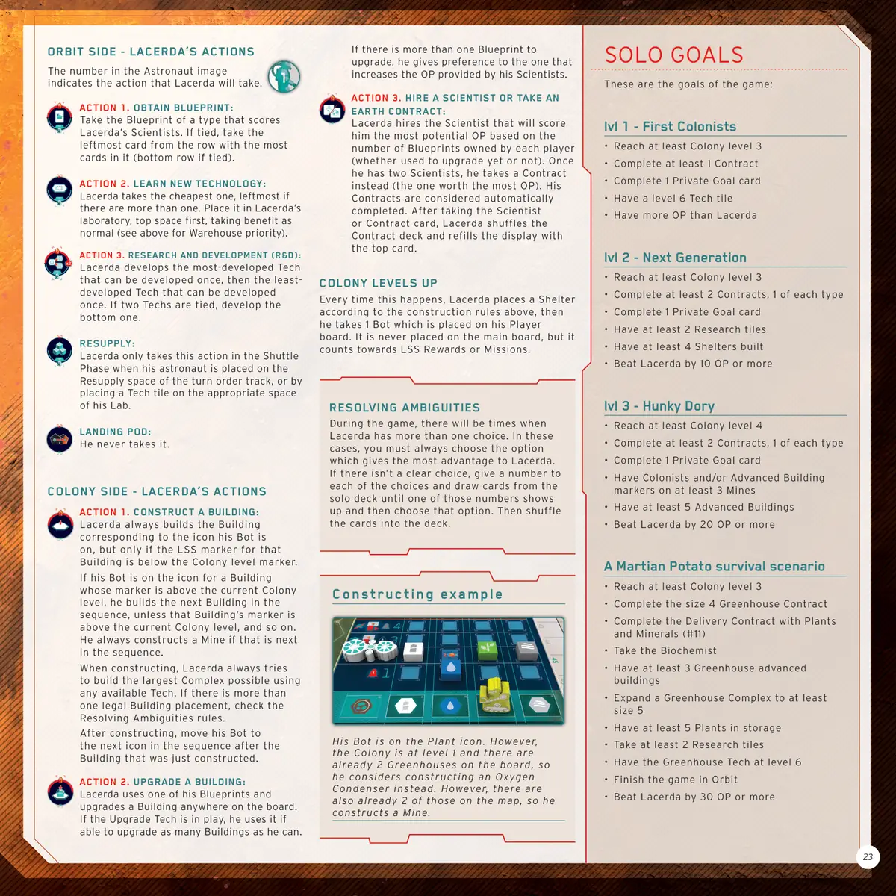
📝 第 23 页 AI 机翻对照（点击展开）
轨道侧 - 拉塞达的行动
宇航员图像中的数字
表示拉塞达将采取的行动。
行动 1. 获取蓝图：
获取一种能计拉塞达科学家分数的
蓝图。如果平局，从拥有最多卡牌的行
中拿取最左边的卡牌（如果平局则取最底行）。
行动 2. 学习新技术：
拉塞达拿取最便宜的那张，如果有多个则
拿取最左边的。将其放入拉塞达的实验室，
优先放在最上面的空间，正常获得收益（关于仓库优先级见上文）。
行动 3. 研究与开发（R&D）：
拉塞达开发一次可开发的最先进技术，
然后开发一次可开发的最不先进技术。
如果两项技术平局，则开发下方的那项。
补给：
拉塞达仅在航天飞机阶段当他的宇航员被放置在
回合顺序轨道的补给空间时，或通过将技术板块
放置在其实验室的相应空间时才采取此行动。
着陆舱：
他从不采取此行动。
殖民地侧 - 拉塞达的行动
行动 1. 建造建筑：
拉塞达总是建造与其机器人所在图标对应的
建筑，但前提是该建筑的LSS标记低于
殖民地水平标记。如果他的机器人在一个
标记高于当前殖民地水平的建筑图标上，
他会建造序列中的下一个建筑，除非该建筑的
标记高于当前殖民地水平，依此类推。
如果序列中下一个是矿场，他总是建造矿场。
建造时，拉塞达总是尝试使用任何可用技术
建造最大的综合体。如果有多个合法的建筑
放置位置，请检查解决歧义规则。
建造后，将其机器人移动到刚刚建造的建筑
序列中的下一个图标。
行动 2. 升级建筑：
拉塞达使用他的一张蓝图升级版图上任意一处
的建筑。如果升级技术已投入使用，他会在能够
升级尽可能多的建筑时使用它。如果有多个
可用的蓝图进行升级，他优先选择能增加其
科学家提供的OP的那张。
行动 3. 雇佣科学家或获取地球合同：
拉塞达雇佣能基于每位玩家拥有的蓝图数量
（无论是否已用于升级）为他提供最多潜在OP的
科学家。一旦他拥有两名科学家，他则改为获取
一张合同（价值最高的OP）。他的合同被视为
自动完成。获取科学家或合同卡后，拉塞达洗
合同牌组并用顶牌补充展示区。
殖民地升级
每次发生这种情况时，拉塞达根据上述建造规则
放置一个庇护所，然后他获得1个机器人，将其放置在其玩家
版图。它永远不会被放置在主版图上，但它会计入LSS奖励或任务。
单人目标
这些是游戏的目标：
1级 - 最早的殖民者
• 至少达到殖民地等级3
• 至少完成1份合同
• 完成1张私人目标卡牌
• 拥有1张等级6的科技板块
• 拥有比Lacerda更多的OP
2级 - 下一代
• 至少达到殖民地等级3
• 至少完成2份合同，每种类型各1份
• 完成1张私人目标卡牌
• 至少拥有2张研究板块
• 至少建造了4个避难所
• 以10点或更多的OP优势击败Lacerda
3级 - 一切顺利
• 至少达到殖民地等级4
• 至少完成2份合同，每种类型各1份
• 完成1张私人目标卡牌
• 在至少3个矿场上拥有殖民者和/或高级建筑标记
• 至少拥有5个高级建筑
• 以20点或更多的OP优势击败Lacerda
一个火星土豆生存场景
• 至少达到殖民地等级3
• 完成尺寸4的温室合同
• 完成带有植物和矿物的交付合同(#11)
• 选择生物学家
• 至少拥有3个温室高级建筑
• 将温室综合体扩展到至少尺寸5
• 在储存中至少拥有5个植物
• 至少选择2张研究板块
• 拥有等级6的温室科技
• 在轨道上结束游戏
• 以30点或更多的OP优势击败Lacerda
解决歧义
在游戏过程中，有时Lacerda会有多个选择。在这种情况下，你必须总是选择对Lacerda最有利的选项。
如果没有明确的选择，给每个选择编号，然后从单人牌库中抽牌，直到出现其中一个编号，然后选择该选项。然后将这些牌洗回牌库。
建造示例
他的机器人位于植物图标上。然而，殖民地等级为1，并且版图上已经有2个温室，所以他考虑建造一个氧气冷凝器。但是，地图上也已经有了2个氧气冷凝器，所以他建造了一个矿场。
x2
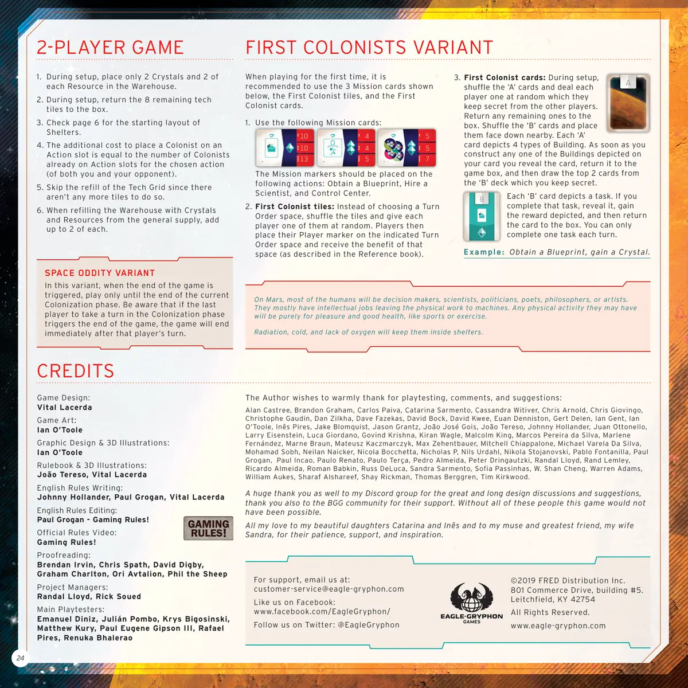
📝 第 24 页 AI 机翻对照（点击展开）
作者衷心感谢以下人士的测试、评论和建议：
Alan Castree, Brandon Graham, Carlos Paiva, Catarina Sarmento, Cassandra Witiver, Chris Arnold, Chris Giovingo,
Christophe Gaudin, Dan Zilkha, Dave Fazekas, David Bock, David Kwee, Euan Denniston, Gert Delen, Ian Gent, Ian
O'Toole, Inês Pires, Jake Blomquist, Jason Grantz, João José Gois, João Tereso, Johnny Hollander, Juan Ottonello,
Larry Eisenstein, Luca Giordano, Govind Krishna, Kiran Wagle, Malcolm King, Marcos Pereira da Silva, Marlene
Fernández, Marne Braun, Mateusz Kaczmarczyk, Max Zehentbauer, Mitchell Chiappalone, Michael Varela Da Silva,
Mohamad Sobh, Neilan Naicker, Nicola Bocchetta, Nicholas P, Nils Urdahl, Nikola Stojanovski, Pablo Fontanilla, Paul
Grogan, Paul Incao, Paulo Renato, Paulo Terça, Pedro Almeida, Peter Dringautzki, Randal Lloyd, Rand Lemley,
Ricardo Almeida, Roman Babkin, Russ DeLuca, Sandra Sarmento, Sofia Passinhas, W. Shan Cheng, Warren Adams,
William Aukes, Sharaf Alshareef, Shay Rickman, Thomas Berggren, Tim Kirkwood.
同样也要感谢我的Discord小组，感谢他们进行了精彩而漫长的设计讨论和建议，也要感谢BGG社区的支持。没有这些人，这款游戏就不可能实现。
将我全部的爱给我的美丽女儿Catarina和Inês，以及我的缪灵和最好的朋友，我的妻子Sandra，感谢她们的耐心、支持和灵感。
如需支持，请通过以下邮箱联系我们：
customer-service@eagle-gryphon.com
在Facebook上关注我们：
www.facebook.com/EagleGryphon/
在Twitter上关注我们：@EagleGryphon
©2019 FRED Distribution Inc.
801 Commerce Drive, building #5.
Leitchfield, KY 42754
保留所有权利。
www.eagle-gryphon.com
制作人员
- 在设置阶段，只在仓库中放置2个水晶和2个每种资源。
- 在设置阶段，将剩余的8个科技板块放回盒中。
- 查看第6页了解避难所的初始布局。
4. 在行动格上放置一个殖民者的额外成本等于所选行动上已有的殖民者数量（包括你和对手的）。
5. 跳过科技网格的补充，因为没有更多板块可以这样做。
6. 当用通用供应中的水晶和资源补充仓库时，每种最多添加2个。
第一次游戏时，建议使用下面显示的3张任务卡、第一批殖民者板块和第一批殖民者卡。
1. 使用以下任务卡：
任务标记应放置在以下行动上：获得蓝图、雇佣科学家和控制中心。
2. 第一批殖民者板块：不选择回合顺序格，而是洗混这些板块并随机给每位玩家一个。玩家然后将他们的玩家标记放置在指示的回合
2人游戏
早期殖民者变体
3. 早期殖民者卡牌：在设置阶段，洗混'A'卡牌并随机发给每位玩家一张，其他玩家不得查看。将剩余的'A'卡牌放回盒中。洗混'B'卡牌并将其面朝下放在附近。每张'A'卡牌描绘了4种建筑。一旦你建造了卡牌上描绘的任何一种建筑，你就揭示该卡牌，将其放回游戏盒中，然后从'B'牌库顶摸取2张卡牌，你需保密。每张'B'卡牌描绘了一项任务。如果你完成了该任务，就揭示它，获得 depicted 的奖励，然后将卡牌放回盒中。每回合你只能完成一项任务。
太空古怪变体
在此变体中，当游戏结束被触发时，只继续进行到当前殖民化阶段的结束。请注意，如果在殖民化阶段最后行动的玩家触发了游戏结束，游戏将在该玩家回合结束后立即结束。
在火星上，大多数人类将是决策者、科学家、政治家、诗人、哲学家或艺术家。他们大多从事脑力工作，将体力劳动留给机器。他们可能进行的任何体力活动纯粹是为了愉悦和健康，如运动或锻炼。
辐射、寒冷和缺氧将使他们待在避难所内。
游戏设计：
Vital Lacerda
游戏美术：
Ian O'Toole
平面设计与3D插图：
Ian O'Toole
规则书与3D插图：
João Tereso, Vital Lacerda
英文规则撰写：
Johnny Hollander, Paul Grogan, Vital Lacerda
英文规则编辑：
Paul Grogan - Gaming Rules!
官方规则视频：
Gaming Rules!
校对：
Brendan Irvin, Chris Spath, David Digby,
Graham Charlton, Ori Avtalion, Phil the Sheep
项目经理：
Randal Lloyd, Rick Soued
主要测试玩家：
Emanuel Diniz, Julián Pombo, Krys Bigosinski,
Matthew Kury, Paul Eugene Gipson III, Rafael
Pires, Renuka Bhalerao
示例：获得一张蓝图，获得一个水晶。